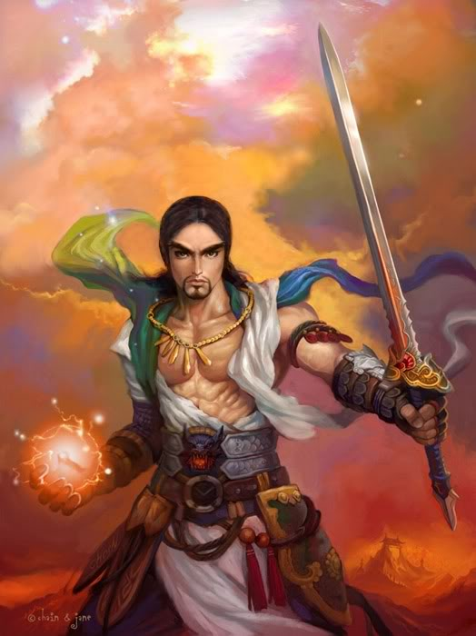
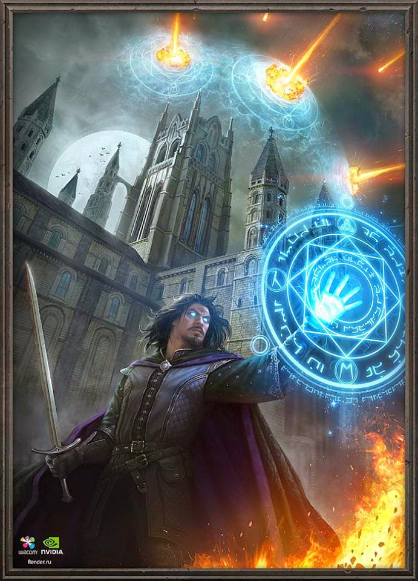
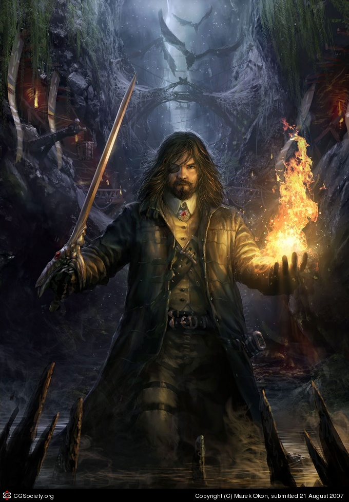
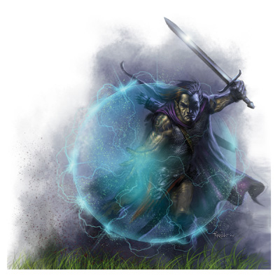
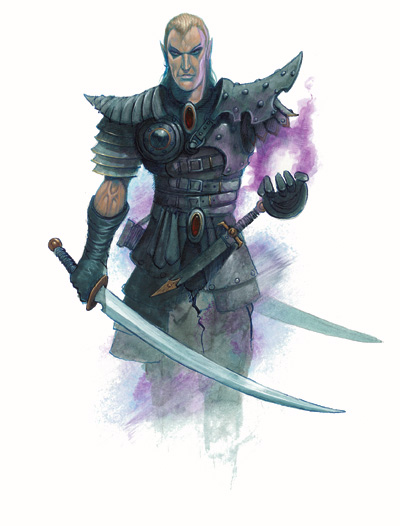
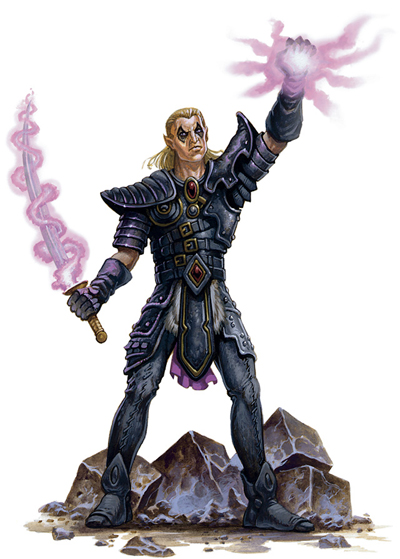

Myrrh, Frankincense, and Steel
Kurald Galain's Guide to the Magus, updated June 2020
If you enjoy this guide, please check out our games on Steam or Patreon.

Introduction
Options and Ratings
Role of the Magus: More than Shocking Grasp
Option Categories
Magus Tactics
Class Abilities
Ability Scores
The Strength Build
The Dexterity Build
The Intelligence Build
The Charismatic Magus
Races
Core Races
Exotic Races
Archetypes
Good and Excellent Archetypes
Lesser Archetypes
Out-of-Class Archetypes
Arcana
Level 3 Arcana
Level 6 Arcana
Level 9-10 Arcana
Level 12 Arcana
Level 15+ Arcana
Feats
Traits
Skills
Spells
Cantrips
First Level Spells
Second Level Spells
Third Level Spells
Fourth Level Spells
Fifth Level Spells
Sixth Level Spells
Spells from Other Lists
How to Gain Spells
Selection of Spells
Enchanting your Weapon
Equipment
Melee Weapons
Reach Weapons
Ranged Weapons
Gear and Magic Items
Consumables
Familiars
Multiclassing
Dipping Other Classes
Prestige Classes
Variant Multiclassing
Dipping Into Magus
Sample Builds
Grashnak Stormbringer, Assault Magus
Ilyara Bladesong, Maneuver Magus
Chryn Flamestaff, Controller Magus
Introduction
After the traditional classes fighter, wizard, cleric, and rogue, a common character type that people look for is the bladesinger or gish: a hybrid warrior/spellcaster who wields a sword in one hand while weaving magic with the other. Since multiclassing fighter with wizard doesn't work too well, a variety of approaches exist to build this character type. Paizo's solution is the Magus class.
The Magus is a melee character with spellcasting ability, and several features that add synergy between the two. A Magus can temporarily enchant any weapon just by holding it, gets excellent mobility due to spell support, and is a contender for the highest spike/nova damage in the game. A Magus won't be as good at combat as the fighter, nor as good a caster as the wizard, but gets some of the best parts of both. While commonly using a sword, a Magus build can also work with whips, thrown weapons, or unarmed combat.
A Magus isn't the easiest class to build or to play well, and the original guidebook, Walter's, is several years old and doesn't cover newer spells, feats, and archetypes. So this inspired me to write a new class guide on the Magus to compile a list of good choices and strategies. Feedback is welcome, and my thanks go to Walter for writing the earlier guide.
Questions and suggestions can be posted in this thread on GITP, or this thread on Paizo.
Options and Ratings
This guide includes all material up to June 2019, including Chronicles of Legend, Planar Adventures, and the Martial Arts Handbook. It also covers the new systems from Pathfinder Unchained: skill unlocks in the skill section, variant multiclassing in the dipping section, and combat stamina under feats.
Since the Magus is both a melee class and a caster, several parts of this guide may be useful to other melee classes (notably the feat section), or to other arcane casters (such as the spells and familiars). The chapters on traits and items can be practical to any character.
The various options are rated by color for effectiveness, and listed in bold if legal in the Pathfinder Society (PFS) public campaign. For arcana and archetypes, this guide lists all options. For other categories like feats and spells, it only lists the best options for a Magus, and some options that look good but really aren't. This is because enumerating e.g. every feat printed for Pathfinder would be impractical at best.
- Bad - It's a trap, avoid it at all cost. This option either doesn't actually do what it advertises, or is so situational that it probably won't ever come up.
- Okay - It works, but it's not great. For a niche build, this option may be worth it, but in general you should get something better. If an option isn't listed, it's probably yellow.
- Good - A solid and effective choice; the bread-and-butter of a good Magus, although it could be build-specific or somewhat situational.
- Excellent - One of the strongest and most versatile options; every Magus should seriously consider this, regardless of build.
Role of the Magus: More than Shocking Grasp
The stereotypical Magus wields a keen scimitar and only casts the Shocking Grasp spell over and over again. However, the class is much broader and more versatile than that. A Magus can excel at debuffing enemies, or at using combat maneuvers, or at mobility via flight and teleportation. Here's a summary of party roles the suitable for the Magus:
- Melee Striker - Your area of expertise. While your average damage is behind that of a fighter or barbarian, your spike damage more than makes up for that. First, you get to channel touch spells through your attack, doubling their damage on a critical hit; you can deal 12d6 on a crit at level 5, with a 15-20 crit range. Second, each combat you get your pick of magical abilities on your weapon. Finally, you are one of the most mobile melee classes, with in-class flight, spell-based pounce, and Dimension Door combined with a full attack at its destination.
- Ranged Striker - While you can use a bow, most of your class features work in melee; therefore your ranged capability is mostly based on your spells. That said, you can use most of the classic blasting spells like Scorching Ray, Fireball, and Disintegrate.
- Tank - You are a bit of a glass cannon, and need to use spells for protection. Staples like Shield and Mirror Image are available for this purpose, as well as some defensive class abilities.
- Buff and Support - You are decidedly not a support character. While you have several buff spells available, most of them are aimed at buffing yourself, and you have no curing ability to speak of. Funnily, you can deliver touch buffs through a whip.
- Debuff and Control - If you want, you can build a Magus as a mean debuffing machine. You are one of the best at using trip or disarm maneuvers (with the True Strike spell) and have a decent amount of debuffing spells. Touch-based debuffs work well with your channeling ability.
- Utility - While not a full-fledged wizard, you have several staple utility spells in your arsenal, including Silent Image, Dispel Magic, and Teleport. In addition, you have several ways to gain access to a few of your favorite wizard spells. You have a good amount of skill points due to high intelligence, and a decent list focusing on mental skills.
Option Categories
Based on the above roles, options are sorted into the following ten categories. This makes it easy to find what you want for the character you're building; for example, if you want to become better at melee attacks, just check the Offensive category for feats, items, or spells. If you try an option and don't like it, Pathfinder allows your character to retrain options during downtime, for a small amount of gold (and prestige points, in Pathfinder Society). It’s even easier for spells, since you can just buy new spells for your spellbook and prepare them the next day.
- Battlefield Control - Creating clouds, walls, pits, and other obstacles that shape the battlefield.
- Blasting - Direct damage effects, anything that goes boom!
- Debuff - Hindering enemies by inflicting blindness, stun, and assorted penalties and conditions.
- Defense - Making yourself hard to hit, adding resistances, and protecting you or your teammates.
- Metamagic - Improving your spells; I’m including any effect herr that e.g. increases caster level.
- Mobility - Boosting your speed, adding new movement modes, and getting around quickly.
- Offense - Adding bonuses to hit or to damage, generating extra attacks, and so forth.
- Restoration - Healing, condition removal, and mitigation of nasty effects placed on your party.
- Skills - Direct boosts to skills, from bonuses, rerolls, or added effects.
- Toolbox - General utility, any practical effect that doesn't fit in the above categories.
Magus Tactics
Your primary ability is spell combat, which combines attacking with spellcasting, and which you should use as often as possible. Essentially, you can do the following four things in your turn, in any order: (1) make all iterative attacks with your main weapon; (2) cast a spell; (3) use a swift action; and (4) take a 5' step. Mastering this is the key to playing an effective Magus.
If the spell is a touch spell, you get an extra attack as part of casting it, similar to flurry of blows. In any case, you do take a -2 attack penalty, and your spell provokes opportunity attacks unless you cast defensively. Let me show you some examples:
- Cast Shield from out of melee range, so you don't provoke; 5' step to the enemy, and make your iterative attacks.
- Cast Shocking Grasp defensively, make the attack from that spell plus your iterative attacks, and 5' step back so you can cast without provoking in the next round.
- Cast Vampiric Touch from well out of range, move 30' up to the enemy, and make the attack for it. If the attack misses, hold your charge so you can try again on the next round.
- Cast True Strike from out of melee range, 5' step to the enemy, then use defensive combat to make a maneuver. You get +16 to hit with it, and an AC bonus against your opponent's opportunity attack.
- Enchant your weapon as a swift action, cast Frostbite trusting your buff spells to block the opportunity attack; then make your iterative attacks plus the one from Frostbite. The next turn, use spell combat to first make your remaining attacks with Frostbite, then cast another spell.
- Cast Chill Touch, then instead of making a touch attack, use your weapon to do a trip maneuver. If the maneuver hits, the touch spell will also connect. This also applies to disarm and sunder maneuvers, as well as to subsequent attacks while the spell lasts.
Class Abilities
Your three iconic class abilities are spell combat, channeling touch attacks, and enchanting any weapon you hold; you gain supplemental abilities as listed below.
- Spell Combat (level 1) - The iconic gish ability of attacking with a weapon in one hand, casting a spell with the other. It's both flavorful and a big action advantage. You get this straight out of the gate, and you should use it as often as possible; get a touch attack cantrip so this ability is available at-will, like flurry of blows. You can also boost your concentration checks by taking an attack penalty, which is decent for an int Magus but should be avoided by a str or dex Magus.
- Spellstrike (level 2) - When you cast a touch spell, you can deliver it via your weapon instead. This targets normal AC instead of touch AC, but if you miss you can hold the charge and try again on your next attack, such as the one from spell combat. Touch spells cast in this way benefit from your weapon's crit range and reach: you can cast damage spells that crit on a 15+, or land debuffs from a distance using a whip. Finally, you can use this to apply a touch spell to a maneuver, e.g. by tripping someone and having Shocking Grasp go off if you hit.
- Enchant Weapon (level 5) - As a swift action, you can give your weapon abilities like flaming or keen. Are you facing a monster with cold vulnerability? Boom, you now have a frost weapon. Your enemy can only be hit by cold iron weapons? Make your weapon +4 and it bypasses those pesky damage resistances. Stripped of your gear and only armed with a piece of wood? Okay, it's now a +2 flaming club. This gives you great flexibility for every combat.
Additional Class Abilities
- Basic Statistics (level 1) - You can use all martial weapons and get a medium base attack bonus, which you can effectively increase to full with your enchantment ability. You have good fortitude and will saves, 1d8 hit dice, and good skill points because intelligence is one of your main stats.
- Armored Casting (level 1, 7, 13) - You can cast arcane spells in light armor from the start. If you're strength-based and don't mind a lower movement rate, you can also do this in medium and heavy armor at later levels. You can't use shields.
- Arcane Pool (level 1) and Arcana (every 3rd level) - Like many classes, you can choose from a list of special abilities every couple levels. These are essentially Magus-only feats, which are covered in detail below. You get a daily pool of points which are used to activate most of these. Your enchant weapon ability also uses these pool points, so keep a point in reserve to use it in each combat.
- Spell Recall (level 4, level 11) - You can recover spells, effectively giving you extra spell slots, for one pool point per spell level. While nice enough, you can also do this with a cheap Pearl of Power item, so you should probably save your points for something else. At level 11, the cost is halved, and you can cast any spell in your book in this way, even if you didn't prepare it.
- Feats (level 5, 11, 17) - As if the Magus needed more options, you gain several bonus feats throughout your career. From level 10, you can take fighter feats, but nothing really stands out there. See the feat section below.
- Knowledge Pool (level 7) - Basically, you can now scribe every Magus spell into your spellbook given some downtime. It's a decent perk but buying new spells isn't expensive anyway.
- Counterstrike (level 16) - You get a free attack against anyone casting defensively. However, this won't disrupt their spell, and you can't cast a touch spell in this way.
- Wizard Spells (level 19) - You get two wizard spells in your spellbook of each level up to sixth. This comes rather late in your career; the Spell Blending arcana lets you gain wizard spells as early as level 3.
- True Magus (level 20) - As capstones go, this is not spectacular, but you gain a few numerical bonuses that will come in handy. You can also cast defensively without having to roll for concentration, but this roll would have been an automatic success several levels ago. A recent book offers alternative capstone abilities; the best choices are Perfect Body to boost your str/dex by eight, or With This Sword, which changes your weapon into an artifact.
Ability Scores
Essentially, there are three main ways to play a Magus: the big and tough bruiser that focuses on strength, the graceful blade dancer that builds on dexterity, and the cunning debuffer that prioritizes intelligence. There is overlap and you can mix and match these, but each build has different priorities for feats and items. The str and dex builds are capable melee combatants that enhance their abilities with spellcasting; melee normally works off strength, so the dex build uses the feats Weapon Finesse and Dervish Dance to use your dex modifier instead. The int build is a spellcaster first, warrior second, and prefers feats and gear to increase spell save DC. An archetype offers a way to use charisma instead of intelligence; we'll discuss that separately.
You will need good strength OR dexterity for offense, decent intelligence for spellcasting, and decent constitution for hit points as a frontliner. Sample builds are found at the bottom of this document.
The Strength Build
- Damage. The strength build gets much better damage with (a) size-altering spells like Enlarge Person or Monstrous Physique; (b) natural attacks from race or polymorph; (c) standard-action and opportunity attacks; or (d) everything below level 3. None of these apply to the dex build.
- Save two feat slots. Note that these feats can duplicate most of the benefits of the dexterity build if you want, e.g. by taking Improved Initiative or Fleet.
- Climb and swim skills. Until you get consistent access to flight, these are very useful; putting just one skill point in each will make you good at them.
- Disadvantage: Lower defenses, and you have to choose between lower AC (from light armor) or lower movement rate (from medium armor).
- Suggested stats after racial adjustments: Str 17-18, Dex 12, Con 14, Int 14, Wis 10, Cha 8. Not recommended for small races, obviously.
The Dexterity Build
- Defense. Your armor class and reflex saves are better than those of the str build, and you retain your full movement rate throughout.
- Higher initiative. Always good to have.
- Stealth and escape artist, although they aren't on your class list unless you spend a trait.
- Disadvantage: It costs two feats to enable this build, and you deal less damage on standard action and opportunity attacks.
- Suggested stats after racial adjustments: Str 8, Dex 18-19, Con 14, Int 14, Wis 10, Cha 8. Yes, you can safely dump strength to the minimum that can carry your gear; power attack is not a good pick on this build. The item section below includes advice on how to go adventuring with a low strength score.
The Intelligence Build
- Magic. You get more spells per day, and your save DC is much better. You probably want Spell Focus and Greater Spell Focus to boost it even more.
- Concentration checks. These become automatic several levels earlier.
- Knowledge skills, since you get a bigger bonus and more skill points to invest.
- Disadvantage: Your melee attacks are less accurate and less damaging.
- Suggested stats after racial adjustments: Str 14, Dex 12, Con 14, Int 17-18, Wis 10, Cha 8. Again, not recommended for small races, as it would take a lot of feats to run an int/dex build.
The Charismatic Magus
Normally, a Magus doesn't benefit from charisma, so it's the default dump stat. However, if you want a more socially inclined Magus, the Eldritch Scion archetype changes your casting stat from intelligence to charisma. In addition, you become a spontaneous caster instead of prepared. See the list of archetypes below, and note that this one plays very differently from a normal Magus.

Races
Given the builds above, you can create a good Magus with almost every race: anything with a boost to str, dex or int is a decent choice. Of course, small races should avoid the strength build. The races offer various bonuses for a favored class; however, as a frontliner with d8 hit dice, I recommend simply taking an extra hit point each level.
Core Races
- Dwarf - Although lacking in the right stat boosts, Dwarves get excellent saving throws via their racial ability, Glory of Old trait, and Steel Soul feat. Also, dwarves can 5'-step over some difficult terrain. Finally, they can use the dwarven waraxe, which is the most damaging one-handed weapon but has a lower crit range.
- Elf - A dex boost and int boost makes elves a natural at two of the three builds. They can take alternative racial bonuses to checks to cast defensively, piercing spell resistance, initiative, or even to all saves. Finally, they can get a 35' movement speed; the original bladesinger is an elf, after all. Note that aquatic elves can learn water spells from other classes; see the spells section below.
- Gnome - As a small race with no dex or int boost, this is not the best pick for the Magus, although it is by no means bad either. Gnomes can add different options to their enchant weapon ability; good choices include conductive, defending, and menacing. They can also learn a wizard illusion spell each level; see the spells section below. Finally, gnomes can get exotic weapon proficiency for free, as long as it's a weapon they've made themselves.
- Half-elf - Their flexible stat boost means they can work with any of the builds. Free exotic weapon proficiency is nice, as is +2 to will saves (although you can't take both). Half-elves can take the spell Paragon Surge at level 10, which offers good flexibility, and can get a +4 racial bonus to initiative.
- Half-orc - Again, a flexible stat boost. Note that the ferocity ability is a great way to get yourself killed, so I recommend switching that out. There are some excellent alternate racial options here, including a free bite attack, +2 to all saving throws (with the Fate's Favored trait), free proficiency with whips, seeing further through fog, and a damage bonus on fire spells. Solid overall.
- Halfling - This small race is a natural for the dex build and can get 30' movement via an alternative ability. It gets adaptable luck for a retroactive +2 to a roll, thrice per day (again, with the Fate's Favored trait). Halflings can use improvised weapons at no penalty, and finally, they can be surprisingly damaging with the Risky Striker feat.
- Human - Well, we know humans are decent at everything, so it should be no surprise they make a good Magus. Their racial options are unimpressive but an extra feat is always useful.
Exotic Races
- Aphorite - These unusual outsiders from Axis get a bonus to str and int as well as to several types of saving throws; a nice defensive racial ability; and a speed-boosting spell-like ability.
- Gathlain - Small fairies with a natural fly speed; bonuses to dex and to AC; and alternative features that negate the con penalty, give innate damage resistance, or let you roll twice on a will save. Overall a powerful choice.
- Goblin - Everyone's favorite cute little psychopaths, they get a double dex boost, which is great for any dex-based melee build; plus a big bonus to perception and decent feat support.
- Grippli - Frog-like humanoids with good dexterity and a climb speed. Of special note is the Agile Tongue feat, which lets them use touch spells from 10' away, as early as level 1.
- Samsaran - A spellcasting race of blue-skinned mystics, they have the ability to add a handful of spells from any arcane class to the Magus list. See the Spell Blending section below for examples. The race boosts int, and unfortunately has a con penalty.
- Strix - What makes these raven-like creatures amazing is their natural fly speed. Getting a saving throw bonus and perception as a class skill is just icing on the cake, and they get a dex increase to boot.
- Sylph - The classic spirit of the forest. Aside from boosting dex and int, sylphs have a 35' movement rate, and can gain permanent flight for the cost of two feats.
- Tiefling - Humans with demonic ancestry, they can be dex/int or str/wis depending on their breed, and get goodies like a natural attack and energy resistance (which you can boost further with the Unscathed trait). What makes tieflings great is their prehensile tail ability, which they can use to draw potions and scrolls as a swift action. Also, they can use spell combat with metamagic rods by holding the rod in their tail.
Archetypes
Paizo's take on alternate class features, archetypes add a theme to your character and add or remove several class abilities to fit the flavor. These vary in power, and several archetypes are not so great at low level but become powerful later. Except as indicated, you can take only one of the good or excellent archetypes.
Good and Excellent Archetypes
Beastblade (level 1-9 / 10+)
- Gain a familiar with spellcasting ability. No effect at low levels.
- Stacks with Eldritch Archer or Staff Magus.
- At low level, this archetype simply doesn't do a lot, as the familiar arcana is something you can take anyway, the level 4 ability is rarely needed, the level 7 ability starts out only with cantrips, and you do lose spell recall. Then at level 10-11 it suddenly becomes very good: your familiar gets to cast several spells per day (such as the ever-popular Shocking Grasp) while you cast your own, and if he connects you get to make a free attack. This is a big action advantage, and you can pick a complementary archetype for your familiar as well.
Bladebound
- Gain an intelligent weapon, with free pluses and enchantments as you level up.
- Stacks with Hexcrafter or Kensai, but not both.
- This great archetype provides you with an intelligent weapon. It increases to a bigger "plus" for free, saving you a sizeable chunk of wealth for other items. In addition, it gets a scaling damage bonus, can briefly do force damage, resists sundering, and can teleport to your hand if disarmed. Like a familiar, it gives you alertness for free and lets you roll twice on knowledge and perception checks. The weapon doesn't come with special properties, but that's what your enchant weapon ability is for; the main downside is that you can't get Spell Storing this way. With all these extra boons, it's effectively a +8 weapon at the top levels; by comparison, if you'd spend 1/3rd of your wealth on your weapon, then the weapon from this archetype will be better than what you can buy, except at level 18-20. And this all costs you only one arcana slot and some pool points, which you get back at later level via a pool recovery ability. Overall a powerful and versatile option for your Magus.
Card Caster
- Attach spells to thrown weapons, like Gambit from the X-Men.
- Stacks with Hexcrafter, and of course Staff Magus.
- You can use spellstrike on thrown weapons, with extra options for weapon enchantment thrown in for free; a belt of Mighty Hurling will help your damage here. This is the only archetype that lets you use melee touch spells at range, right from the start. However, you can no longer enchant or spellstrike with melee weapons, and you still can't use thrown weapons with spell combat. Despite the name, instead of cards as weapons, consider a chakram (with more damage and bigger range), or a net or alchemist fire (which target touch AC). Overall, a nice perk at low cost.
Eldritch Archer
- Full archer that gets a free spell every round.
- Stacks with Beastblade or Hexcrafter.
- If you want to use a bow instead of a blade, this archetype is extremely good. Instead of a gish, it is primarily an archer, and should take feats accordingly (e.g. point-blank and precise shot). To support this, you gain perception skill, enchantments for your ranged weapon at half the cost, and you each round you can both cast a spell and make a full volley of attacks. Ranged spellstrike is not so useful though, as it mainly makes your spells less accurate; just aim the spell normally, or use a firearm so you can make ranged touch attacks. You need the Reach Spellstrike arcana (and level 9) to use spellstrike with non-ranged spells, and Distant Spellstrike (and level 12) to use your weapon's range. Finally, since this archetype doesn't require free hands to cast spells, you can also use a one-handed thrown weapon and use your other hand for e.g. a shield and metamagic rod. Overall, it's very powerful, even if it isn't really a gish any more.
Eldritch Scion (level 1-3 / 4+)
- Gain bloodline powers, and be a spontaneous caster based on charisma. Runs out of steam quickly at low levels.
- Stacks with Staff Magus.
- This is really a game changer for the Magus. The main benefit is that you gain a Bloodrager bloodline, with some very powerful abilities. For example, Aberrant gives you reach, lets you stagger on any crititical and gives you a long list of immunities including nauseating, exhaustion, and 50% of critical hits; all of which together for one swift action. Arcane bloodline gives you three strong buff spells at the same time for a swift action, and lets you take extra opportunity attacks against any monster using a spell-like ability. Or, the Destined bloodline gives you a large luck bonus to AC and saving throws, lets you reroll one attack every two rounds and gain insight bonuses to more attacks, automatically confirms your critical hits, and lets you make a saving throw to negate being killed, once per day. These are highly useful abilities that a normal Magus doesn't get, and if there's a low-level ability you don't need, you can replace it with a bloodline famliar for free. Now using these abilities costs a pool point every two rounds, which sounds like a harsh limit, but in practice you can keep this up through every combat of the day around level four. To do so, you should avoid arcana that require pool points, don't use your enchant weapon ability at low level, and probably take the Extra Arcane Pool feat. It's an interesting change of pace, but bear in mind that the Scion locks you out of most other archetypes, that it gets only few skill points, and that it can't use metamagic with spellstrike.
Hexcrafter
- Gain hexes like a witch, and curse spells.
- Stacks with Bladebound, Card Caster, Eldritch Archer, Magic Warrior, Puppetmaster, or Staff Magus.
- This highly versatile archetype lets you swap arcana for witch hexes, and get one for free as well. The biggest gem for a Magus is the Flight hex, which gives you a 60' fly speed whenever you need it (for a standard action), eight levels before Overland Flight. Other good choices include Misfortune and Slumber (which combine well with the Hex Strike feat), reactive hexes Murksight and Gift of Consumption, Iceplant for the AC bonus, or the friendlier Healing hex. You should avoid Cackle, since a Magus rarely has a move action to spare. In addition, you get access to greater and major hexes at higher level, and add curse spells to your spellbook. There are few good curses, but the Brand cantrip, Blindness, and Bestow Curse stand out.
Kensai (level 1-8 / 9-12 / 13+)
- Better weapon skills, less spellcasting. Doesn't add much at low levels.
- Stacks with Bladebound.
- At lower levels, you lose spells per day, spell recall, and knowledge pool (and armor, but a wand or feat can cover for that). Getting int to AC is useful, but perfect strike is not very good, and the rest of the Kensai's low-level abilities are easily duplicated by feats. But then you hit level 9 and suddenly you almost automatically confirm all your crits, starting from 11 you can add nasty conditions to your crit with the Critical Focus feat tree, at 13 you can act even if surprised, and the capstones at levels 19 and 20 are certainly impressive. Great damage overall.
Magic Warrior
- Tribal Magus that wears a mask, and can gain animal abilities at will.
- Stacks with Hexcrafter and/or Staff Magus.
- Most of the changes made by this archetype are about flavor and roleplaying. The primary impact is that you trade one arcana for gaining a Beast Shape ability activated with arcane pool. This basically means you can have fly by level 3, four levels before you get the fly spell. When needed, you can instead take a swim speed, or scent, or a few other options. Few classes in the game can fly at such an early level.
Mindblade
- Psychic Magus with a mentally constructed weapon, and spells from the psychic's list.
- Stacks with none of these archetypes.
- This archetype drops most of the extra class features, but retains the core. Instead of enchanting a weapon, you create one out of thin air with enchantments included. The upside is that this is free, as you get the pool points back when the weapon disappears. The downside is that it's weaker than adding onto an existing magic weapon. At higher level, you can create two weapons, but the writing is unclear as to whether you can use both together in spell combat. In addition to all that, you become a spontaneous caster, cast with no vocal or somatic components; this means you can wear heavy armor with no penalty, if you become proficient from e.g. a multiclass dip. You add a number of psychic spells to your list; good choices include swift/immediate spells like Burst of Adrenaline or Mental Barrier; or tricks like Mindshock and a lower-level Inflict Pain. But, note that you can't use metamagic with spellstrike, that your concentration DC for most spells goes up by ten, and that enemies with Intimidate will easily shut down your spellcasting. The archetype makes for an interesting set of alternative abilities.
Puppetmaster
- Debuffer Magus focusing on enchantment and illusion, with access to bard spells.
- Stacks with Hexcrafter.
- This archetype excels at debuffing. In a single round, you can cast a debuff at a group of enemies, add a second debuff (e.g. Deja Vu) to an enemy failing its save, then step next to it and make a full attack. You won't be able to enchant your weapon or spellstrike like a plain Magus, so feats and items that further cripple your enemies work well with this (e.g. Frostbite as a touch attack + Enforcer feat + Cruel weapon). Since most of the Magus's defensive buffs are illusions, you can still use those with spell combat; otherwise, you should rely on the bard list as the Magus doesn't have a lot of illusion or enchantment spells. You also get more skill points. Finally, using a long-lasting spell like Keep Watch, you can keep a Silent Image (or other concentration-based illusion) going indefinitely.
Skirnir (level 1-7 / 8+)
- Magus with a shield. Avoid at low levels.
- Stacks with none of these archetypes.
- At low levels, the problem is that casting a spell makes you lose your shield bonus, which is the whole point of this archetype; and you can't use spell combat. The level 8 feature solves both, assuming you use a buckler, and at that point this becomes a good defensive archetype. For instance, at level 9 you can have a +3 shield at half the cost, enchant it to +5 and fortification with arcane pool, and get spell storing for free. Finally, diminished spellcasting is offset by the free spell from your bond item. Overall, the archetype gives good defense at the expense of spell recall and greater spell access, but at low levels you should probably avoid it.
Staff Magus
- Better defense, less weapon damage.
- Stacks with Beastblade, Card Caster, Eldritch Scion, Hexcrafter, or Magic Warrior.
- You get a bonus to armor class in exchange for wielding a weapon with low crit range and no reach. At level 7, an ordinary Magus could have a +6 armor bonus, whereas the Staff Magus has +4 from armor and about a +4 shield bonus. At level 13, the ordinary Magus could get +9 whereas the Staff Magus gets +12, of course with no reduction in movement rate. It's a straightforward tradeoff, and decent enough for an int Magus in particular. Note that these bonuses don't kick in until level 7, so you might as well wield another weapon until then. Finally, the archetype lets you take Weapon Specialization early, and at level 10 you get the unusual ability of recharging staffs.
Lesser Archetypes
- Armored Battlemage - This archetype loses two of the Magus's core abilities, spell combat AND enchanting weaponry, and simply doesn't get much in return. Enchanting your armor is a mediocre ability since your best defense comes from your spells, and the only armor ability on the list that's worth its cost is Fortification. If you're looking for a defensive archetype, try Skirnir or Staff Magus; this one is nothing but a trap.
- Deep Marshal - The main perks are early access to medium and heavy armor, and a decent bonus on spell resistance checks. However, the major downside is that you lose access to all illusion spells (including your best defense buffs, such as Mirror Image), as well as necromancy and enchantment; you get abjuration in return, but its best spells were already on your list anyway. This major downgrade of your spellcasting ability is really not a good tradeoff.
- Elemental Knight - Suli only. This is only barely an archetype, and more a list of extra arcana for suli. The interesting one is Energy Reflection; at higher levels this is too expensive, but at low levels spending e.g. two points to bounce back a Scorching Ray is fun. The other two arcana are not so good, and the downside of this archetype is that it blocks you from the stronger archetypes, except Bladebound and Staff Magus. Eldritch Scion is better on a suli.
- Esoteric - A poorly written attempt at an unarmed Magus. The main problem is that a regular Magus can already use his enchant ability and spellstrike on unarmed strikes. As long as you're spellstriking with a touch spell, you count as armed so you don't need Improved Unarmed Strike either. Even with the monk bonus damage, it takes heavy optimization to get unarmed strikes on the same damage level as a regular weapon, and they have a low crit range. So there's no real benefit to this archetype, and you do get stuck with diminished spellcasting, no bonus feats, and no spell recall. Overall, that's pretty bad; check the Jistkan Artificer instead.
- Fiend Flayer - Tiefling only. Its main ability basically trades your hit points for pool points. That's too nasty to do just for fun... but you're not going to use it in an emergency either, first because it requires a standard action, and second because emergencies are the time when you really don't want con damage. Also, the two new arcana are pretty bad and are easily duplicated through other means. So, even though the archetype doesn't cost you anything, it gives you something that you'll probably never use, so you might as well forget it exists.
- Greensting Slayer - This is laughably bad. Instead of your weapon enchantment ability for +X/+X the whole combat, you get to deal +Xd6 damage once, and your pool point is wasted if your attack misses. And you can take a ridiculously situational arcana to re-target darkness spells. Best avoid this one.
- Hexbreaker - You gain the ability to counter and reflect curses. On the one hand, it is very rare for characters to end up cursed, and the ability is unreliable. On the other hand, you don't lose a lot for taking this. So this archetype is a decent trade but not a great one, and rather forgettable. The two new arcana are entirely not worth the cost, though.
- Iron-Ring Striker - Almost everything about this archetype is a drawback or restriction: diminished spellcasting, fewer pool enchantments, less feat choice, and the enlarge ability is weaker than the polymorph spells on your list and can’t be used with spell combat. The only actual benefit is unarmed damage, and it takes 12 to 16 levels before that matches your weapon damage. Just take the Jistkan Artificer archetype and forget about this one.
- Jistkan Artificer (level 1-13 / 14+) - Aside from flavor, the main appeal of this archetype is the AC bonus from its shielding arm arcana; and at high levels, combining your golem arm with size-increasing polymorph effects gives a good damage bonus. While hands-down much better than the esoteric or iron-ring, this archetype doesn't get unique abilities except the situational Break Spell, and comes at a the cost of diminished spellcasting and less arcana.
- Kapenia Dancer - This is basically Rose from Street Fighter. But in practice, it's an inferior version of the Kensai, with a scarf. It's unfortunate how two of the new arcana require a critical hit, whereas a scarf has only a narrow crit range. If you want reach at an early level, you should just wear a colorful whip around your neck and call it a scarf.
- Myrmidarch (level 1-8 / 9+) - If you want a ranged Magus, take the Card Caster or Eldritch Archer archetype. If you want the fighter’s advanced weapon options, you can get them more easily with variant multiclassing. This archetype has a high cost (diminished spellcasting, losing spell recall and arcana slots), doesn't let you use spell combat with ranged weapons, and its ranged spellstrike ability only works with spells that are already ranged. For a frontliner, this archetype opens up the fighter's advanced weapon training at level 9, for which Difficult Swings, Focused Weapon, and Warrior Spirit are good (none of these are legal in PFS). For armor training, Armored Juggernaut and Armored Sacrifice are decent. Avoid at lower levels.
- Nature-Bonded Magus - An oddball archetype whose main perk is druid spells, which the Magus normally has no way of getting. See the spells section below. You get a familiar for free and probably want to permanently merge with it, for its good bonus to armor class and, at high level, hit points. However, you give up your arcane pool, which locks you out of your enchant weapon ability as well as most (but not all) good arcana. And your familiar cannot take actions when merged, which limits its use. All in all not the greatest trade, but there are some pretty good druid spells out there...
- Sigilus - Replacing spellstrike is never a good sign, and giving it up for a situational +1 to hit is a really bad tradeoff. And then you get weaker armor in exchange for a low amount of energy resistance, if you guess the correct type ahead of time. And that’s it. Two straight downgrades and zero new abilities make this one of the weakest archetypes.
- Sorrowblade - Here's an archetype that simply doesn't do a whole lot. It replaces one arcana by a weaker and more expensive version of the Enforcer feat, adds a pool enchantment effect that you could just have obtained from a bit of cash, and that's pretty much all. It doesn't cost much to take this, it's just pretty unimpressive.
- Soul Forger - An archetype that exchanges several good and versatile features for crafting-related abilities that you really don't need. Even for a blacksmith, the granted abilities just aren't very good; and should you somehow lose your bonded item, you become almost crippled in both melee and spellcasting. Avoid this archetype and take Bladebound instead.
- Spellblade - You give up the iconic spellstrike feature in exchange for the ability to attack an extra time per round, which you could already do with spellstrike anyway. Then, you pay spell slots for the privilege, and get access to a few crappy arcana that end this ability prematurely, and a defensive one that doesn't stack with Ring of Protection or Protection from Evil. Yeah, you should probably pass on that; I really don't see the point of this archetype.
- Spell Dancer - Elf or half-elf only, or human / half-orc / aasimar with the Racial Heritage feat. The upside: you're really fast and mobile. The downside: a Magus without this archetype is already really fast and mobile, with spells like Expeditious Retreat, Bladed Dash, and Fly. In addition to this mildly redundant mobility boost, at level 7 you get the AC for medium armor (and later, heavy armor) while still wearing light; however, the price is that you forego your enchant weapon ability. Overall this is not a great tradeoff, but it's workable if you'd rather spend your pool points on arcana instead of on weapon enchantment.
- Spell Trapper - In most campaigns, it is rare that you have the time to trap an area before combat occurs; but if this happens frequently in your campaign, this archetype is an effective choice. The best traps are probably the snare, to immobilize someone in the air; the swarm, to nauseate enemies; and the poison trap, which deals con damage. The main downside of the archetype is that it doesn't stack with most others (except Bladebound and Card Caster); otherwise, it doesn't lose anything you can't get in other ways.
- Spire Defender - In PFS, this is for elves only. This archetype is aimed at a maneuver Magus: you get proficiency with a disarm or trip weapon, and gain Combat Expertise, the prerequisite to numerous maneuver feats. All you lose is armor, which you can get back by multiclassing, a feat, or wand. Finally, instead of spell recall, you get a skill boost ability that is primarily useful for escaping grapples, because flight is simply better. That said, if I were to make a maneuver Magus, I would probably not use this archetype: I would either use a whip so I can do them at range without provoking, or the Wand Wielder arcana with a wand of True Strike.
Out-of-Class Archetypes
Certain other classes have archetypes that let them gain some of the Magus's class features. This list shows how well they do compared to a Magus; it is not otherwise a rating of those classes.
- Blade Adept (Arcanist) - This takes a primary spellcaster and gives him some of the Magus's abilities. On the plus side, it's got a better spell list than the Magus, and gets higher level spells earlier, and eventually gets 7th to 9th level spells; in addition to the abilities from Bladebound, a very good Magus archetype. But on the downside, the blade adept gets worse hit points than a Magus, less BAB and fort save, and can't cast in armor. It has a list of only three good arcana to pick from, plus two duds; and most importantly, it doesn't get spell combat. All in all, the Blade Adept is a good spellcaster simply by virtue of being an arcanist, but the archetype doesn't add enough melee ability for it to count as a gish.
- Duskblade (3.5 class) - While the duskblade is a pretty good class, it's no match for the Magus. With the arcane pool enchantment, the Magus matches the duskblade's to-hit bonus and base weapon damage; and they're comparable in e.g. skills and saving throws. But on top of that the Magus gets a vastly better spell list, earlier access to higher level spells, the action advantage of spell combat, and numerous bonus feats and arcana. The duskblade's full attack channel is a good ability, but comes available much too late to make up for this difference.
- Ectoplasmatist (Spiritualist) - This could as well have been a Magus archetype, as you lose literally all spiritualist class features (except a handful of SLAs that are on your spell list anyway). Effectively, this makes you a Magus with wisdom-based psychic casting, a weaker spell list, a better skill list, and a whip. However, this archetype lacks the to-hit bonus from arcane pool, gets a very limited enchant weapon ability at high level only, and gives no arcana at all except ghost blade. Overall that makes it a poor substitute for a regular Magus.
- Phantom Blade (Spiritualist) - As with ectoplasmatist, you lose all spiritualist class features and gain spell combat and spellstrike. However, this archetype adds the Bladebound abilities as well as bonus feats. You get slightly more options for enchanting your weapon, but at a higher cost; and you cannot give your weapon regular pluses (meaning it will have issues with damage reduction). Your arcana are locked in as ghost blade, accurate strike, and devoted strike; unless you variant-multiclass back in to Magus. Overall the result is weaker than a standard Magus, but still a very effective gish.
- Eldritch Knight - The clear difference is that Magus has class features that synergize fighting and casting, whereas EK gets 7th-level spells (albeit at a higher level than many campaigns end). Less obvious is that the Magus is much stronger numerically. Compared to an EK build at level 13, a typical Magus has +3 better to-hit, thanks to its enchant ability; +2 fort and ref, because it has two strong saves where EK has one; +18 HP, due to favored class bonus and a wizard's low hit die; three more feats; 15-20 threat range on touch spells; armored casting; and spell combat. The EK pays a very steep price just for getting earlier access to 5th level spells.
So if you want a gish character, it's really not a contest. Below level 15, Magus is hands-down much better. Above level 15, the EK's only advantage is top-level spells, but if you want those, you should arguably play a full caster instead.
Arcana
The Magus learns a special trick every three levels, and can gain more by spending feats. Halflings and elves can gain more arcana as a favored class bonus. Before picking an arcana that requires pool points or swift actions, bear in mind that you have a limited amount of both, and that your enchant weapon ability is already a very good use of these. Don't take too many abilities that require the same resource.
Level 3 Arcana
Blasting Arcana
- Pool Strike (and all its variants) - Vastly underpowered and a waste of your pool points.
Debuffing Arcana
- Lingering Pain - A way to neutralize enemy casters. If you hit a spellcaster and he's not dead yet, activate this ability to effectively shut him down until you kill him the next turn. This also works on ranged attacks, and combines well with a Distracting weapon and the Disruptive feat.
Defensive Arcana
- Arcane Redoubt - Lasts only one turn, and you need to have a good shield bonus to begin with, and you need to declare this before you know you're going to be attacked. That's downright awful.
- Concentrate / Book-Bound - So limited that it's completely not worth it. At low levels, if you want to boost your concentration check, take the Combat Casting feat; at moderate levels, your check should be high enough to not worry about it.
- Flamboyant Arcana - Parry and riposte is a very useful ability, derring-do isn't all that great but you get it for free. This works with any weapon; if you have the Combat Reflexes feat or the Defensive Strategist trait, you can even parry when you're surprised. The spell Deivon's Parry has a similar effect, but without the riposte.
- Intuitive Protection - Way too situational to spend an arcana slot on; just carry a scroll of protection instead.
- Spell Shield - The defensive equivalent of arcane accuracy, it is useful if you don't get the chance to buff your defenses in combat, and you can throw it up in reaction to an enemy moving within range. Note that this doesn't stack with the Shield spell.
Metamagic Arcana
- Close Range - You can use this to spell combat with Ray of Frost to deal +3 damage per round (using liquid ice as a focus), which is a decent ability. Furthermore, on any Magus with a good crit range, this works well with Ray of Enfeeblement as well as Enervation (which can be gained via Spell Blending, below). Note that as written, this only works with actual rays, not with any ranged touch spell.
- Reach Magic - It's an ok ability, but you already have medium-range spells on your list so it's easier to just use those.
- Rod Mastery - Not worth it. At low levels, you simply can't afford rods. At high levels, a rod with a low-level spell won't have a good DC even with this arcana, and a rod with a high level spell won't get much of a bonus from this.
- Rod Wielder - Rather situational, and you've got some no-SR spells on your list already, but if you get your hands on a rod with a good no-save yes-SR spell then this can help you.
- Silent Magic - Too situational to spend an arcana on. Being silenced is pretty rare, and not crippling to a Magus since you can still use your weapon. If you want a countermeasure, get a cheap metamagic rod of silent spell.
- Still Magic - A decent, if situational, emergency option to deal with grapples, including the ever-popular Black Tentacles spell. However, it's better to invest in defenses that prevent you from being hit and grappled in the first place.
- Wand Mastery - It's decent at low levels, but at moderate levels this arcana is hampered by the fact that higher-level wands are just too expensive to use, and lower-level wands still won't have a good DC even with this arcana. Good wands for this are Grease, Color Spray, and Mudball; and you should probably take wand wielder first.
Offensive Arcana
- Arcane Accuracy - Since it costs both a pool point and a swift action, this is not something you'll be using every round. Rather, use it to nova, when facing something that needs to die right now, and combined with spell combat and your favorite touch spell.
- Arcane Deed - This used to be a great choice, but since the errata, most of the swashbuckler deeds no longer do anything at all. There's only four deeds left to choose, and all of them are really bad for a Magus, or simply bad in general. Talk about overnerfing, wow.
- Maneuver Mastery - On a normal build, you'll only use maneuvers occasionally, so instead of taking this arcana you can memorize a few True Strikes and get it over with. On a maneuver specialist, this is a decent pick at higher levels.
- Natural Spell Combat - If you have a natural attack that doesn't involve your hands, take this arcana to gain an extra attack with spell combat. Because of accuracy issues, it's best used by a Magus that relies on claw attacks, e.g. from race or from a polymorph spell.
- Pool Ray - This is a waste of space. You've got ranged spells in your repertoire that deal way more damage than this.
- Throwing Magus - There's archetypes and spells that already cover your ranged options, but if you want to play a Magus based on thrown weapons, then this is your option of choice... at least between level 5 and the moment where you can afford a +1 returning weapon and retrain out of this.
Skill Arcana
- Arcane Cloak - Stealth is not on your class list, and you've got the Vanish and Invisibility spells available. Just use those instead.
- Divinatory Strike - You want to make knowledge checks before attacking a creature (so that you know what to attack it with), not after you happen to roll a crit.
Toolbox Arcana
- Arcane Scent - If you want scent, pick a race that has scent, or take a familiar that has scent, or cast e.g. Alter Self. Don't waste an arcana on a partial scent ability.
- Familiar - With recent books, adding a familiar is surprisingly good. For starters, you gain a free +2 perception and +4 initiative (or +2 to the save of your choice, or some other tasty bonuses). Then, you get to roll twice on a number of skill checks since your familiar uses your skill ranks. And then you can pick an archetype for your familiar, which could e.g. let it flank with you, cast buffs on you, or resurrect itself for free. A very good arcana for anyone who's not a Bladebound; see the section on familiars later in this document.
- Spell Blending - There are numerous good spells on the wizard list that you don't normally get, but you can learn with this arcana. See the section below for details. You get a two-for-one deal on lower level spells, so wait a couple levels before picking this up. Note that for the Eldritch Scion and Mindblade archetypes, this arcana directly adds to your known spells.
- Spell-Scars - This is a very good and flexible ability. Essentially, it lets you use scrolls for half their store price and without having to spend an action on drawing them. That it provides some insurance against losing your spellbook is a nice perk.
- Wand Wielder - Low-level wands are cheap, so if there's a spell you want to cast every turn, this is a good trick. In particular, True Strike and Vanish are good choices for wands here, and it makes buffing with Shield or Blade Tutor's Spirit easier. It works on staffs, too, although good staffs are rather expensive.
Level 6 Arcana
Debuffing Arcana
- Disruptive - It's a decent enough ability, get up close to an enemy caster and now they have trouble casting. Works best if you take the Step Up feat so they can't get away easily.
Metamagic Arcana
- Empowered Magic - This is good; for example, it can turns your already powerful Shocking Grasp into a once-per-day death strike. Consult with your GM if you can apply this arcana to a spell storing weapon or armor for extra fun.
- Scroll Mastery - This works best with an int Magus. It lets you carry scrolls with situational debuffs (e.g. Grease) and give them a decent change at working. That said, at higher levels you have sufficient spells per day to simply prepare a few situational debuffs and cast them by yourself, which has the advantage of working with spell combat.
Mobility Arcana
- Aquatic Agility / Tabris’s Step - In a ship-based campaign, this can be a life saver. In most campaigns, however, it is too situational, and it's easier to prepare yourself for water by carrying a potion of Air Bubble. Plus, around level 6 you should be looking into flight abilities instead.
Offensive Arcana
- Arcane Dealer - You gain the ability to use cards as darts. You know what you can already use as darts? Actual darts. Not that they're a good weapon to begin with; if you want a ranged Magus, a chakram is a better choice.
- Enduring Blade - This is not worth it. In the rare case that you do have three fights in the next ten minutes or so and you want to use the same enchantment combination for each and you know it in advance, then you should still save the arcana slot and just activate your enchant weapon ability three times as needed.
- Prescient Attack - On a regular Magus, Arcane Accuracy is simply better. However, if you've got the sneak attack ability (e.g. from multiclassing) then this allows you to attack an enemy while hidden or invisible, and get sneak attack damage on all your attacks.
Toolbox Arcana
- Broad Study - Generally you won't need this, but if you're dipping into another spellcasting class then this is worth considering. For instance, if you have one cleric level, you could use this to cast Divine Power or Cure Light Wounds as part of spell combat.
- Dark Shifter - Frankly, this is so situational that I can't imagine it ever coming up. If you're going to move darkness around, it's far easier to just cast the spell on yourself, using a race with darkvision.
- Ki Arcana - Even in the case that you're multiclassing into ninja or monk, the ability to exchange ki points for pool points isn't worth an arcana slot. If you find yourself short, the Extra Arcane Pool or Extra Ki feats are a better choice.
Level 9-10 Arcana
Debuffing Arcana
- Dispelling Strike - Vastly overpriced since you need to spend one point per spell level, and it's not even guaranteed to work. If you want this ability, you should get a Dispelling Weapon, or just use spell combat to cast Dispel Magic the normal way.
- Spellbreaker - It's rather situational. The desired outcome from enemies failing to concentrate is that they don't get a spell off; adding insult to injury with an attack to the face is fun but not really necessary.
Defensive Arcana
- Circle of Order - This is much too situational. The Spell Shield arcana works on everything, lasts longer, and takes an immediate action instead of a swift. Just use that instead.
- Prescient Defense - It's a less practical version of Spell Shield, since it only works on one enemy and only if you've already hit him. I'd stick with the original, except if you have the Skirnir archetype, since this one does stack with a physical shield.
Metamagic Arcana
- Rakshasa's Fortune - This is too unreliable to work with. When you polymorph, you pick a form with the ability you need most, so having a chance to get an extra ability that you don't particularly need isn't worth an arcana slot.
- Reach Spellstrike - If you have the Eldritch Archer archetype, this is a great deal to expand your ranged options. The Card Caster can do it without this arcana.
Offensive Arcana
- Accurate Strike - The improved version of Arcane Accuracy, this basically makes all your attacks hit (and all your crits confirm) for a full turn, given that many high-level monsters still have a touch AC of around 12. There's no real need to have both though, consider retraining.
- Arcane Edge - Spending a pool point and an action to do a small amount of extra damage is not a good deal. Most creatures won't live long enough to take this damage twice.
- Ghost Blade - Ghost Touch is very situational, and Brilliant Energy can't be used until level 13 and is rather overpriced at a +4. A brilliant +1 weapon isn't so much better than a plain +5 weapon that I'd want to spend an arcana slot on it, since many enemies have AC bonuses that aren't dependent on their armor or shield.
- Hasted Assault - Haste is one of the best buffs in the game, so casting this on yourself as a swift action is very good. Sure, you can also cast Haste as a normal spell, but this arcana lets you open combat with e.g. Bladed Dash in the first round, for three attacks at your highest BAB plus your iteratives. You'll have to decide on circumstances whether to use this the first round, or enchant your weapon, although you'll usually want to have both by round two. Retrain this once you can afford Boots of Speed, though.
- Planar Hunter - You don't need this ability, since your weapon can already bypass material DR if you boost it to +4 or more, and alignment-based DR if you boost it to +5. By this level you can easily afford a +2 weapon, and your enchant weapon ability does the rest.
Toolbox Arcana
- Ranger Trap - At level 1, this would be a nice ability to have, but at level 10 it's a joke. For example, you could do 1d6+5 damage with a fire trap, or 8d6 by casting Scorching Ray.
Level 12 Arcana
Defensive Arcana
- Greater Arcane Redoubt - Suffers from all the problems of Arcane Redoubt, plus it's much too expensive. Skip it.
Metamagic Arcana
- Distant Spellstrike - It's situational, but given the ridiculous range on bows this will come in handy at times. However, you could also be using long-range spells or a metamagic rod of Reach.
- Maximized Magic - Perhaps surprisingly, a maximized spell isn't all that much better than an empowered one. Empowered fireball deals 15d6 for an average of 52.5, whereas maximized it deals a flat 60. That said, it's still a good effect and being able to do it an extra time per day is certainly useful.
Offensive Arcana
- Critical Strike - Well, there's no kill like overkill. If you crit something and it isn't dead yet, you get to tack on an additional 10d6 Shocking Grasp, or another spell of your choice. However, the problem is that this costs a swift action, so if you've e.g. enchanted your weapon or put up Hasted Assault this turn, you can no longer activate this arcana. So this will certainly come up at some point during the day, just not necessarily when you want it most.
- Devoted Blade - It depends on your campaign, but it's quite likely that at high level you'll be facing a lot of evil creatures that resist flaming/frost/shock damage. So adding +2d6 holy damage is a good deal, assuming your Magus is good-aligned. Bypassing alignment-based DR is something you can already do, by enchanting your weapon to +5.
- Spell Trickery - This has the same problem as Critical Strike, i.e. that it takes a swift action after hitting an enemy. Additionally, this mainly works with self-buffs like Mirror Image; you want to put these up early in combat, but in the first few turns of combat you've likely used your swift on something else (e.g. enchant weapon). You could use it with Phantasmal Killer, but that requires such a complicated build (with good save DCs and reliable dirty tricks) that it's not really worth it.
Level 15+ Arcana
Defensive Arcana
- Reflection - A very cool ability but also very pricy. That said, even if you use it only once per day, it's still a nice trump card. The Ring of Arcane Mastery also gives this effect.
Metamagic Arcana
- Quickened Magic - A free quicken, with no level limit. What's not to like? Tieflings and vanara probably don't need this since they can hold a quickening rod in their tail, but for anyone else this is the best high-level arcana available.
Offensive Arcana
- Bane Blade - This is basically Devoted Blade, except that it works on everything. There's no need to have both, retrain as necessary. However, note that this is available some eight levels earlier with the Bane Baldric item.

Feats
Aside from the regular feat every odd level, the Magus gets three bonus feats over a 20-level career. Feats marked * can be taken as a bonus feat at level 5, 11, and 18.
Blasting Feats
- Burning Amplification - Your fire spells set their targets on fire, even on a successful save. Great for any fire blaster.
- Elemental Spell* / Benthic Spell* - You don't generally need a feat for this, considering your spell list has numerous spells from different elements, and you can always use your weapon instead when facing something that is immune.
- Empower Spell* / Maximize Spell* - Because of the level increase, it turns out that Intensified Spell is simply better for a Magus. For example, Shocking Grasp deals 35 damage when intensified, 24 empowered, 52 with both, or 30 maximized. Fireball deals 52 damage when intensified, 52 with empower, 78 with both, and 60 with maximize. At low levels, stick to Intensified; at high levels, add Empower. Maximize isn't worth the extra level increase.
- Intensified Spell* - A staple for any Magus build that uses damaging spells, it keeps your low-level spell slots relevant for much longer as it increases the damage cap by a whopping five levels. It becomes even better if you mix it with traits like Metamagic Master.
- Maximized Spellstrike - Much too expensive, and it only works against opponents denied their dex bonus. You'd be better off using the Empower or Maximize arcana, or a metamagic rod.
- Spell Specialization / Varisian Tattoo / Flumefire Rage - Increases your caster level for all spells of one school, or one spell in particular. This is primarily useful for your damaging spells, but note that there are traits and consumable items with the same effect. Spell Focus is the prerequisite. If you're an Eldritch Scion, the third feat boosts your fire spells even more.
Debuffing Feats
- Authoritative Spell* - A great way to stop an enemy from doing anything useful; and if paired with a spell that doesn't give a save (e.g. Ray of Frost) then neither does this feat.
- Blissful spell* / Enforcer* - A nice way to add a free debuff to all attacks with a touch spell. Enforcer requires the Frostbite spell, the Blade of Mercy trait, or a Merciful weapon.
- Chilling Amplification - If you're going to use spells like Frostbite or Frigid Touch, this is a decent addition to your debuffs.
- Dazing Spell* - Makes for a very efficient combo with the Frostbite or Chill Touch spells, basically forcing a save vs. dazing on each of your hits.
- Destructive Dispel - A good pick for an int Magus, it adds insult to injury by stunning enemies whenever you use Dispel Magic on them. This works well with a Dispelling Weapon; otherwise you could also just cast a stunning spell directly.
- Rime Spell* - Adds a decent debuff to frost spells on your list, such as Frostbite and Flurry of Snowballs. Stacks with Enforcer, in the case of the Frostbite spell.
- Toppling Spell* - Works with Magic Missile to knock down a group of enemies, which is great for stalling them.
- Tripping Staff* - A poorly written feat, since the 'trip' weapon quality doesn't really help you, and you can already use spellstrike with trip attacks without the feat.
Defensive Feats
- Aerial Roll* - By the time you get this, you'll be flying most or all combats thanks to your flight and polymorph spells. That means you can negate one attack per round for free, which is a very useful defense.
- Arcane Armor Training* - A Magus doesn't need this, and doesn't have the minor actions to spare anyway. Even if your archetype doesn't allow armor, using your defensive spells would be better than this.
- Arcane Shield - While it sounds nice in theory, the problem is that it doesn't stack with a Ring of Protection (which you should have by that level) and that the Spell Shield arcana simply does a better job.
- Combat Casting - At lower levels, you may want this to ensure you can safely pull off a cantrip or 1st-level spell in combat, although with good tactics you might not need it. At higher levels, your concentration check is good enough that you don't need this, so you can retrain it.
- Divine Defiance - A good defensive feat, it increases your saving throws against divine casters and demonic opponents, which in many campaigns you'll be facing a lot.
- Fortified Armor Training* - Given how deadly critical hits can be, a feat to automatically defend against these is good to have. You can wear a mithral buckler for this purpose, and ideally a teammate can use the Mending spell to repair it afterwards.
- Improved Shield Bash* / Shield Focus* / Unhindering Shield* - With the first feat, you can use a shield in spell combat as long as you attack with that; with the latter two, you can do this with any other weapon. Your spells may be a better defense, but getting up to +7 to your armor class is a good deal. You do need to get shield proficiency from another feat or class dip.
Metamagic Feats
- Disruptive Recall - This feat is simply too unreliable. If you want more spells per day, invest in Pearls of Power or the Extra Arcane Pool feat.
- Expanded Arcana - If you have the Eldritch Scion or Mindblade archetype, you can use this to learn more spells, although using a Page of Spell Knowledge item or the Spell Blending arcana is probably better.
- Quicken Spell* - Since you have several ways to cast spells as a swift action already (e.g. spell storing weapon or the Hasted Assault arcana), you probably want to do so without having to use a slot four levels higher. At level 15 and up, this feat does become a good combo with Spell Perfection.
- Spell Focus / Greater Spell Focus / Favored Enemy Spellcasting - If you're an int Magus, these feats are useful to boost your saving throw DCs even further. Other Magus builds should have other priorities.
- Spell Penetration / Piercing Spell / Knowledgeable Spellcaster - Most of the Magus's common tricks allow for spell resistance, and at higher levels you'll be seeing a lot of that. These feats help you compensate, although you could also use spells that ignore it, such as Glitterdust or Irradiate, or resort to melee combat instead.
- Spell Perfection - It only shows up at high level, but the ability to add a metamagic feat to your favorite spell for free is amazing. The other bonuses are icing on the cake. Requires level 15 and three other metamagic feats as prerequisite.
- Spontaneous Metafocus - For an Eldritch Scion or Mindblade, this is required to use Intensified Spell or other metamagic feats in spell combat.
Mobility Feats
- Dimensional Agility - How would you like an 800' range pounce ability? That's what this feat is for. Normally the spell Dimension Door ends your turn, but with this feat you can use spell combat with DD to teleport at least 800', buff yourself with a swift action, then make a full attack at your destination. That is nothing short of awesome.
- Fleet / Tidal Swiftness - Adds to your movement rate; particularly nice on the slower races. Once you get reliable access to flight, you should retrain this.
- Force Dash - Given the high mobility afforded by the Fly spell and movement-boosting spells like Bladed Dash and Burst of Speed, there's no need to spend a feat on this.
- Lunge* / Lunging Spell Touch / Weapon Trick: Polearm* - They do basically the same thing, giving reach on your attacks, which is a great ability to have. Lunge requires level 8; LST can be taken at level 6, but only works on spell touches. Then again, those tend to be your most important attacks. Weapon Trick can be taken at level 2, but gives a penalty to hit and damage.
- Magic Trick - Since the Floating Disk spell is on your list, this feat effectively gives you a fly speed at-need at level six, quite a lot earlier than Overland Flight comes online. Alternatively, it can turn the Shield spell into a one-round Wall of Force, although this isn't PFS-legal.
- Step Up* - When dealing with enemy spellcasters or archers, this feat prevents them from getting away from you. That's a good tactical option for any melee character. Most casters have a decent chance of failure on casting defensively with their highest level spells, and if they decide to cast a lower spell that's also a win for you.
Offensive Feats
- Blind-Fight* - You will inevitably fight enemies that are invisible, blind you, or hide in smoke clouds. This feat is a good way to counteract penalties for that, although a Heartseeking weapon does it better. Note that an ioun stone can also give you this feat; see the item list below.
- Chaos Reigns - Nice for a polymorph-based Magus; whenever you're in a form without hands, this gives you an extra attack.
- Combat Reflexes* / Torag’s Patient Strikes* - Getting more opportunity attacks is a decent choice for any Magus, and combines well with reach weapons and multiple-touch spells like Frostbite. This feat is best on a dex-based reach Magus, which is best done with the Long Arm spell or Eldritch Scion archetype.
- Divine Fighting Technique: Desna* - If you have the Eldritch Scion archetype, this feat allows you to apply your charisma modifier to attack and damage rolls, effectively using your best ability score for everything. The downside is the smaller crit range.
- Eldritch Assault / Combat Expertise* / Moonlight Stalker* - Automatically confirm one critical threat every round? Sign me up! You can easily have the prerequisite spells running every combat. If you're using this, you can add the other two feats for another good bonus.
- Power Attack* / Piranha Strike* - As a medium-BAB class that regularly takes -2 to hit for spell combat, you really don't want another attack penalty. Besides, you can already use your enchant weapon ability to wield e.g. a +1 flaming shock weapon instead of a +3 weapon, which gives you -2 to hit for +5 damage. So this feat isn't needed on a Magus.
- Redirect Attack* / Artful Dodge* - This is amazing on a Magus: since enemies will be missing you a lot due to your defensive spells, once per turn at no action cost, you can damage an adjacent enemy. In any group fight this is invaluable. Artful Dodge is only a prerequisite.
- Stick-Fighting Style / Counter / Maneuver* - It costs you three feats and locks you into a subpar weapon, but you do get an extra attack each turn that stacks with Haste.
- Weapon Finesse* / Dervish Dance* / Fencing Grace* / Slashing Grace* - If you're a dex Magus, this allows you to add your best ability modifier to damage, although you could also use an Agile weapon for that. A strength Magus or int Magus doesn't need this. Because of errata, this no longer works with Slashing Grace or Fencing Grace.
- Weapon Specialization* / Arcane Strike* / Elven Battle Focus* / Kirin Strike* - Get a damage bonus to all your attacks, although with your damaging spells you don't really need that. The feats that cost a swift action are problematic as you have better things to spend it on
Restorative Feats
- Possessed Hand / Hand's Autonomy - When you're out of the action, your hand can move on its own to assist you in a variety of ways as a useful contingency. Aside from that, you get some decent bonuses to hit and damage; the concentration penalty shouldn't be a problem.
- Wanderer's Fortune - Gives you freedom of movement at-need as a swift action, which is a good counter for grapples and numerous spells. Very useful.
Skill Feats
- Intimidating Prowess - It's a sizeable bonus to intimidate checks for any strength Magus, although you could get a comparable bonus from an item or background instead.
- Signature Skill - See the section on skill unlocks, below.
Toolbox Feats
- Additional Traits - Since you cannot normally retrain traits, this is how you can pick them up if you see some new ones you really like; see the section below for examples.
- Eldritch Heritage / Improved Eldritch Heritage / Skill Focus - Although it requires a substantial investment in charisma, you can benefit from a sorcerer bloodline. In particular, the ghoul bloodline gives you paralyzing claw attacks and an AC bonus, the shapechanger bloodline lets your polymorph effects last all day, and the bedrock bloodline gives tremorsense and Stoneskin as a swift action. Skill focus is only the prerequisite.
- Extra Arcana - Given that there are more good arcana than you can normally take, and that you get bonus feats, spending feats on arcana is a good deal.
- Extra Arcane Pool - You can spend a feat on extra pool points, but you'll only get two for it. At lower levels you should have other feats to take first; at higher levels, you should have enough pool points that you don't run out. This is mainly useful for the Eldritch Scion archetype (which requires a pool point every two rounds), or to gain more spells via Spell Recall (although Pearl of Power items are a cheap alternative).
- Grasping Tail - On any race with a tail (except tiefling and vanara, who can already do this) this lets you draw items as a swift action and hold a metamagic rod without using your hands. Very flexible.
- Improved Initiative* / Noble Scion: War - Going first is good, mm'kay? The Eldritch Scion archetype may want to use Noble Scion for this instead.
- Martial Focus* - This feat opens up various fighter feats from the Weapon Master's Handbook. Unfortunately, most options aren't very useful for a Magus, but Difficult Swings is nice to have, and although expensive, Smash From The Air is very fitting.
- Sage's Guidance / Figment's Fluidity / Undersized Mount / Improved Familiar / Evolved Familiar / Lookout / Mauler's Endurance - See the section on familiars, below.
Path of War Feats
- Deadly Agility* - If you're a dex Magus, this allows you to add your best ability modifier to damage, although you could also use an Agile weapon for that.
- Golden Lion Style* - As long as you have a flanking buddy, he's bound to miss sooner or later, so that gives you a free extra attack per round.
- Hone Weapon* - Gives you a sizeable bonus to damage rolls, which adds up once you get to iterative attacks and the Haste spell.
- Martial Training* - Unless you dip into an initiator class, this feat is the prerequisite to all style feats mentioned in this section. Plus it gives you maneuvers to use.
- Polearm Dancer* - If you want to use a reach weapon as a dex Magus, you can use this in combination with the Weapon Trick: Polearm feat.
- Shattered Mirror Style* - You're likely to be using a weapon from this style anyway, and +2 to AC for one feat is pretty good.
- Tactical Rush* - Effectively gives you pounce ability once every combat. While you could use the Bladed Dash spell for that, this lets you add in another spell.
Traits
By default, you get two traits to flesh out your background. You can't take two traits from the same category, so these are indicated below. If your GM lets you, you can take a drawback to gain a third trait; this is generally a good tradeoff.
Defensive Traits
- Blighted Physiology (rgn) - A straightforward bonus to armor class is a good deal for a melee combatant. The drawback can be problematic if you have a channel cleric in the party.
- Chillblight Emissary (rgn) - Gives you a small amount of damage resistance against almost every weapon. A nice effect but it doesn't scale well.
- Deathtouched (rce: dwarf) / Glory of Old (rgn) - A straightforward bonus to common types of saving throws. If you're not a dwarf, you can take the Adopted (soc) trait to select Glory of Old.
- Defensive Strategist (rel) - Prevents you from being flat-footed in the first round of combat, including surprise rounds, if you worship Torag. Solid for a dex Magus.
- Fate’s Favored (fth) - Increases all luck bonuses; take this on a race that gives those, such as a halfling (with the adaptable luck racial ability) or half-orc, or with the Eldritch Scion archetype with destined bloodline.
- Focused Mind (mgc) / Tireless Logic (soc) - Adds to concentration checks; decent at low levels, when this check isn't very good yet; not needed at higher levels.
- Lessons of Chaldira (rel: Chaldira) / Balanced Determination (soc) / Erutaki Sky Reader - Use this once per day to pass a critical saving throw. A very good fallback for in emergencies.
Metamagic Traits
- Gifted Adept (mgc) / Precocious Spellcaster (rgn) - Pick one spell and cast it at +1 caster level; a good boost for spells that deal damage per level. These traits stack.
- Magic’s Might (rel: Yuelral) / Stabbing Spells (mgc) - Gives you a bonus on checks to get through spell resistance. This is particularly useful at higher levels.
- Magical Knack (mgc) - Adds two to caster level, to a maximum of your character level; take this if you multiclass to avoid losing caster levels.
- Magical Lineage (mgc) / Wayang Spellhunter (rgn) - Pick one spell and cast it one level lower if you use metamagic. This means that e.g. Rime Spell Frostbite or Intensified Shocking Grasp is a 1st level slot, not a 2nd. This is probably the best trait a Magus can get, you'll get a lot of mileage out of this. Note that you can take both of these, possibly even on the same spell.
- Rough and Ready (eqp) - Take this if you want to use metamagic rods, by using them as an improvised weapon. Normally you cannot use rods in spell combat.
Mobility Traits
- Scamper (rce: ratfolk) - A bonus to speed and maneuverability in the first combat round, which is when it matters most. Pretty good for any melee class.
Offensive Traits
- Bestial Wrath (rel: Rovagug) / Bitter Heart (rce: changeling) - Gain +2 on rolls to confirm critical hits. If you're using a keen weapon, this is decent, although a straight +1 to hit (see below) is better.
- Bred for War (rce: human) / Giant-Harried (rgn) / Heirloom Weapon (eqp) - If you're going to use a lot of maneuvers, this will give you a nice boost.
- Favored Champion (rce: human) - Even if you only occasionally use maneuvers, a free reroll makes them much more reliable.
- Finish the Fight (rce: half-orc) / Ancestral Weapon (rgn) - Getting a +1 to most of your attack rolls is very useful. If you're not a half-orc, take the Adopted (soc) trait to obtain Finish the Fight.
- Guiding Spirit (mgc) - You get a solid attack bonus once per day, similar to the Arcane Accuracy arcana.
- Tusked (rce: half-orc) / Mother's Teeth (rel: Lamashtu) - You gain a bite attack. Useful if you're focusing on natural attacks, or using spells that add damage to all your attacks.
Skill Traits
- Agent of Chance (rel: Nivi) / Inspired (fth) - Gives a nice boost to one critical skill check each day, regardless of the skill.
- Bandit (rgn) / Slippery (cmb) - Get +1 to Stealth or Escape Artist, and add it to your class list. Useful skills for a dex Magus.
- Bruising Intellect (soc) - Intimidate now keys off intelligence instead of charisma, giving you a much better shot at browbeating NPCs. This also works nicely with the Enforcer feat.
- Cunning Liar (rgn) / Student of Philosophy (soc) - If you want social skills on your Magus, this trait lets you key Bluff and Diplomacy off intelligence instead, for most purposes.
- Seeker (soc) / Valashmai Veteran (rgn) - Gain Perception as a class skill, with a +1 bonus. Great for any character.
- Trap Finder (cmp) - In case you don't have a rogue in the party, this trait allows you to disable magical traps. Decent for a dex Magus.
Toolbox Traits
- Arcane Revitalization (mgc) / Malleable Magic (mgc) - Essentially gives you an extra pool point. Useful at low levels; at higher levels, you should have plenty of pool.
- Bladed Magic (mgc) - Makes your enchant weapon ability last twice as long. However, that's not enough to reliably have it last through two battles in a row.
- Living Bulwark (rel) - Once per day, take a hit for an adjacent ally. Given the defensive spells you have available, this is a good way of contributing to the team.
- Magaambyan Arcana (rce: human) - Adds a druid or cleric spell to your spell list, offering various new options. See the spells section below.
- Monster Stalker (soc) - Gives you an easy way to detect e.g. aberrations or fey, which can be invaluable in the right campaign.
- Paragon of Speed (rgn) / Reactionary (cmb) - A bonus to initiative, because going first is good.
- Two-World Magic (mgc) - Adds one cantrip to your list. A good pick is Touch of Fatigue, which you can use for spell combat.
Skills
Since you'll start with decent intelligence and likely increase it with items, you have a good amount of skill points. In addition, the Pathfinder Unchained book allows characters to gain new abilities from having 5 or 10 ranks in a skill. The GM decides whether this requires the Signature Skill feat, or you get this for free.
Class Skills
- Climb - Before you get flight, you're likely going to have to do some athletic activity. Putting one rank in it is well worth it, more ranks arguably aren't.
- Fly - After you get flight, you're going to need maneuverability, so invest enough points in this to consistently pass a DC 15 check.
- Intimidate - The only social skill on your list, and you probably don't have the charisma to become good at it. If you're interested, consider the Bruising Intellect trait.
- Knowledges - These are good for identifying creatures, so that you know what abilities to add to your weapon in that particular combat. Note that you can get a double roll from a familiar or the Bladebound archetype.
- Spellcraft - As with knowledge skills, these are a useful investment for any party. When you get to level 15, you should have 15 ranks since it's the prerequisite for the Spell Perfection feat.
- Swim - As with climb, being able to handle water obstacles is useful until you get flight. Again, one rank in each is well worth it, more ranks probably aren't.
- Use Magic Device - As an arcane caster with access to the wizard spell list, you probably won't need this skill much. Leave it to a more charismatic teammate.
Out-of-Class Skills (see Skill Traits above to add these to your class list)
- Escape Artist - Worth considering since it can get you out of grapples, particularly for a dex Magus.
- Perception - Often called the best and most-rolled skill in the game, maxing it out is well worth it.
- Perform: Dance - Two ranks in this are required for the Dervish Dance feat, which is the standard way of running a dex Magus. A str- or int-based Magus can skip this one.
- Stealth - A small character or dex-based Magus may want to max out this as an all-round useful skill.
Skill Unlocks
- Climb - You gain a climb speed at a level where you probably have flight available... that's not so great.
- Intimidate - Allows you to frighten enemies, which is much better than shaking them. It does require a very high roll and a failed will save, though.
- Knowledge - At 10 ranks, whenever you successfully identify a creature, you gain a scaling to-hit bonus.
- Stealth - Reduces the penalty for sniping and moving while stealthed, although you could of course just cast Vanish instead.
Spells
A well-played Magus will cast a spell almost every turn, and needs to prepare a varied selection for the day. You learn two spells for free each level. As a prepared caster you can buy extra spells cheaply, so it’s easy to experiment with your daily selection. Spells that work best from a wand or scroll are marked as such.
Cantrips
Blasting Spells
- Acid Splash - Pinging for 2 points of damage is just not an effective use of your action. Pretty much any other spell would be a better choice.
- Arcane Mark - At level 2 and up, this is your default option to use with spell combat every round; Paizo has confirmed that spell combat is intended to work with cantrips. Cast it defensively for an extra melee attack, just as if you were two-weapon fighting. If you prefer, you can use the next three cantrips instead.
- Brand - If you have the Hexcrafter archetype, you can use this one instead of Arcane Mark.
- Ray of Frost / Disrupt Undead - Combined with the Close Range arcana and liquid ice as a focus, this is a useful option to get an extra attack from spell combat and deal a bit more damage each turn. Without that combo, it's not such a useful spell.
- Touch of Fatigue / Jolt - Finally, if you have the Two-World Magic trait, you can use this instead of Arcane Mark to add a minor debuff or a bit of damage.
Debuff Spells
- Daze - At low levels, this is your best cantrip by a long shot. With spell combat, you can deny an enemy its next turn and still make an attack yourself.
Skill Spells
- Grasp - At low levels, this gives an easy reroll of your climb checks when needed.
Toolbox Spells
- Detect Magic - Your basic sensory enhancement spell, this should come in handy every day.
- Light - If you don't have darkvision, then this is more practical than carrying torches around.
- Mage Hand - Another basic toolbox spell that is commonly useful.
First Level Spells
Battlefield Control
- Glue Seal - Basically the opposite of Grease, it sticks enemies to the ground instead of proning them, and also bypasses spell resistance. Its downside is that its area is much smaller.
- Grease - A staple low-level control spell, this is very versatile as area denial, to disarm opponents, or to get people out of grapples; and it bypasses spell resistance. A wand of Grease is a decent trick to escape grapples, since you can still use a wand in a grapple without provoking.
- Obscuring Mist (scroll) - A good counter to enemy archers by blocking their line of sight; if you don't have enough spell slots, keep a scroll handy as a backup.
Blasting Spells
- Burning Hands - Your first area effect damage spell, but not all that great since the damage is low and your save DCs are less than a primary caster's. Useful against swarms, but otherwise you can do better.
- Frostbite - A very good spell once you get multiple attacks per round, as it adds a sizeable chunk of damage to each. You get a free attack for casting it, and it adds a debuff to boot, more if you combine it with the Rime Spell or Enforcer feats. At mid to high levels, it outdamages Shocking Grasp; but you shouldn’t use this on undead or on other creatures immune to non-lethal damage, or use the Elemental Spell feat to make it lethal. You can use the urea reagent to make this last for another hit.
- Magic Missile / Snowball - At low levels, a wand of Magic Missile is better in your hands than a bow. At moderate levels, it's a good standby against hard-to-hit enemies, and it combines well with the Toppling Spell feat. Due to errata, Snowball is a strictly inferior copy that should be avoided.
- Shocking Grasp - The most iconic Magus spell, it does a large amount of damage in melee, double on a crit, and even gives a to-hit bonus against many enemies. This is a good candidate for the Intensified Spell feat and Metamagic Master trait.
Debuff Spells
- Blade Lash / Thunderstomp - A nice opening spell, try using this with spell combat to trip an enemy, 5' step to move next to it, then make your melee attacks with a bonus since it's now prone. Blade Lash is more accurate, and ignores spell resistance.
- Chill Touch - A good spell against undead, it applies to one attack per level and forces a save vs panic on every hit; plus you get a free attack for casting it. Best used on an int Magus. You can use the salt reagent to make this last for another hit.
- Color Spray - At low levels, this is crazy good. Even at higher levels, stunning a group of enemies remains useful, if you're an int Magus and your spells have a high save DC.
- Mudball - Yes, yes, we get to laugh at you for using a goblin-only spell. That said, blinding with a first-level spell is certainly a useful debuff, and it bypasses spell resistance.
- Ray of Enfeeblement - Can be used with Close Range and is doubled on a crit. That said, the creatures you want to use this on tend to have good fortitude saves, and you have better debuffs available.
- Tamer's Lash - If you're proficient with whips, this is a decent option whenever fighting animals, as it may cause them to flee on every hit.
Defensive Buffs
- Deivon's Parry - Similar to the Flamboyant Arcana, this allows you to counter a melee attack as an immediate action. At higher level, this is arguably the best use for your first-level spell slots.
- Feather Fall - Can be a life saver for you or your teammates; however, you can buy it as an item (see below) and save the spell slot.
- Shield (wand) - Your best defense spell at this level, it's a good strategy to carry a wand and open with this almost every combat at low level, particularly for a str Magus.
- Vanish - A short-term invisibility spell, this protects you against attacks, lets you cast without provoking, and lets you set up a powerful hit with a bonus. A wand of Vanish works nicely with the Wand Wielder arcana, letting you disappear after your attacks each turn.
- Wave Shield - At low levels, this isn't worth the spell slot; at moderate levels, this isn't worth the immediate action. The effect is just too weak.
- Windy Escape - For sylphs, this is a useful immediate action defense. It becomes even better if your GM lets you use it in response to being hit.
Mobility Buffs
- Expeditious Retreat (scroll) - Until you get access to flight, this should be your default movement enhancer. Note that it gives +12 to jump checks as well.
- Monkey Fish (scroll) - For situations where climbing or swimming is important, carry a scroll of this to keep your Magus unhampered by the terrain. Expeditious Retreat tends to work as well in these cases, though.
Offensive Buffs
- Fallback Strategy (wand) / Blade Tutor's Spirit - Both give you a decent boost to hit, one as a static bonus, the other as a reroll. That's useful in any combat, although defensive buffs should probably be your priority.
- Enlarge Person - This is not actually such a great buff for a Magus, since it reduces your AC and doesn't work with spell combat, and on a one-handed weapon the damage increase isn't good. If you want to gain reach, try the Long Arm spell.
- Long Arm - Sponsored by Dhalsim. At low level, this simply gives you reach for the entire combat, which is tactically useful. At higher level, take the Lunge feat instead.
- Reduce Person - For a dex Magus only. This is better than Enlarge, but it's more effective to use a buff that can be combined with spell combat.
- True Strike - Highly useful both for emergencies and for having a maneuver of your choice connect almost automatically, and a good choice for spell combat. A wand of True Strike works nicely with the Wand Wielder arcana, giving you a huge to-hit bonus each turn. No somatic component.
Restorative Spells
- Infernal Healing (wand) - Not a good use of your actions in combat, but very useful for healing up afterwards as it's more efficient per charge than Cure Light Wounds.
Skill Spells
- True Skill - Skip it at low levels; but at high levels, when you have plenty of spell slots, you can trade one for a big bonus to an important skill check.
Toolbox Spells
- Floating Disk (wand) - One of the classics. If you're a dex Magus and need to carry more, this is a useful trick. See also the Magic Trick feat above.
- Mount - Why yes, you can conjure horses. Aside from being hilarious in combat, this is useful for overland travel. You also get Communal Mount and Phantom Steed later.
- Secluded Grimoire - If you think your spellbook might be in danger, this spell will keep it safe indefinitely.
- Silent Image (scroll) - Since this requires concentration, it is not so great for a Magus to use in combat, but there are plenty of non-combat situations where an illusion comes in handy. You get Minor and Major Image at higher levels.
- Unseen Servant (wand) - If you're going to focus on disarming people, have one of these around to pick up the enemy's weapon for you.
Second Level Spells
Battlefield Control
- Euphoric Cloud - A very good control spell, it throws up a cloud at range that keeps a group of enemies out of combat for awhile. It only works on living creatures, but bypasses spell resistance.
- Glitterdust - Hands down the best control spell of this level, it blinds, negates hiding and invisibility, and even ignores spell resistance. Even if your save DCs are not so good, you should keep a scroll of this since See Invisibility is not on the Magus's spell list.
- Pyrotechnics - It's powerful enough, but it's situational since you can't rely on having a bonfire handy, and it hits your party members as well. You should use Glitterdust instead.
- Slick Walls (scroll) - A good counter for enemies with a climb speed, to bring and keep them in your party's melee range.
- Web - Another good area control spell, it grapples a group of enemies to keep them out of combat. It needs to be cast between two surfaces, but that's usually not a problem; it also passes spell resistance.
Blasting Spells
- Defensive Shock - At higher levels when you have spell slots to spare, this is a good pre-buff for when you're expecting combat. It's not worth the action during combat though.
- Fire’s Friend - A nice goblin spell that sets anyone on fire when they attack you in melee, and it can set the environment on fire as well.
- Flurry of Snowballs - A good area effect damage spell at lower levels, since it's pretty big and ignores spell resistance. However, the damage doesn't scale, making it obsolete at moderate levels.
- Molten Orb - At low level, this is a decent way to force enemy spellcasters to make concentration checks on all of their spells.
- Scorching Ray / Stone Discus / Storm of Blades - Scorching Ray is your best single-target artillery spell for most of your career, or all of it with the Empower Spell feat. Stone Discus does the same damage, but as a regular attack instead of a touch attack, which is pretty bad. Storm of Blades deals substantially less damage than the other two.
Debuff Spells
- Elemental Touch - Because of its odd writing, this doesn't work with spellstrike, nor does it give you a free attack when casting it. If your GM allows that anyway, or if you're an unarmed Magus, then the only worthwhile effect here is staggering; the elemental versatility is already covered by your enchant weapon ability.
- Frigid Touch - On a successful attack, it staggers with no save; on a failed attack, you hold the charge and try again. Highly useful, and you can even put it in a spell storing armor or weapon.
- Pilfering Hand - It's a ranged disarm effect, which is hilarious. That said, a Magus could more easily do this with True Strike and (e.g.) Mirror Image to avoid the opportunity attack. This spell has no vocal component.
- Splinter Spell Resistance - This can be useful for letting you and your teammates break through spell resistance, although it gives a saving throw and your DC probably won't be so good. Metamagic piercing rods are a more reliable solution, although this spell stacks with them.
Defensive Buffs
- Anticipate Thoughts - A decent defensive buff for boss battles, that also boosts your offense if the enemy fails its saving throw; for this reason, best on an int Magus.
- Bear’s Endurance / Visualization of the Body - Effectively a preemptive healing spell, it gives you extra hit points so you can take more blows before dropping. The latter is excellent as it lasts all day (and can also give you a big skill bonus); the former only lasts a short while.
- Body Double - A hilarious way of fooling enemies into attacking the wrong target, it effectively gives you a 50% miss chance and allows for some added trickery if you're clever.
- Defending Bone - At higher levels, this will last all day and prevent a good amount of damage throughout. Definitely worth the slot.
- Mirror Image - An amazing defensive buff that will soak up a large number of attacks for you. Easily worth casting every combat, if you have the slots available.
Mobility Buffs
- Bladed Dash - Not many classes gain the pounce ability at level 4, but that's precisely what this spell does when combined with spell combat. Its movement ignores opportunity attacks, and has no somatic component. An excellent choice.
- Raven's Flight - Provides one turn of flight for a swift action, with no somatic component. In certain environments this is a useful tactical option, but normally it's not worth the slot.
- Spider Climb (scroll) - While you don't have flight yet, this gives you a better climb speed than the first-level Monkey Fish, and you can hang from ceilings. Situational but effective.
Offensive Buffs
- Bull's Strength / Cat's Grace - Not so great, since you should have a belt of strength or dexterity by this level, and the spell doesn't stack with that.
- Force Sword / Instant Weapon (scroll) - It conjures a weapon that can hurt ghosts, and you can fight oozes and puddings without damaging your main weapon. Useful as a backup measure.
- River Whip / Ghost Whip - A great spell for any whip Magus, it lets you target touch AC instead of regular AC for the entire combat. If you favor a different weapon, you won't need this.
- Rock Whip - Good for any build that's not about crit ranges, this spell gives you long reach even if you're not proficient with whips, ignores cover, and tacks on a bull rush.
- Shared Training - It's a long-lasting party buff, and there are not a lot of those in the game. Suitable teamwork feats include Outflank, Precise Strike, and Broken Wing Gambit.
- Umbral Weapon / Telekinetic Strikes - Various ways of adding damage to all your attacks, although at higher level Frostbite will usually be a better choice.
Skill Spells
- Assumed Likeness - Who says a Magus can't be social? This long-lasting buff gives you a free +4 on the social skill of your choice.
Toolbox Spells
- Alter Self - Not so useful in combat, but in infiltration missions or social campaigns, looking like a different race may come in handy. Although in a pinch, you can get a claw/claw/bite triple attack by turning into a troglodyte.
- Invisibility (scroll) - For combat usage, two or three rounds of being invisible should be plenty, meaning you can use the first-level Vanish spell instead. For out-of-combat usage, a scroll of Invisibility is a useful thing to carry.
- Shatter (scroll) - Since unattended objects don't get a saving throw against this, it's a versatile spell that lets you e.g. break chains, snap wooden pillars, and generally be destructive within its weight limit.
Third Level Spells
Battlefield Control
- Nauseating Trail - An impractical variation of Stinking Cloud, because of its awkward targeting.
- Sleet Storm - Creates a huge zone that blocks all vision and drops speed to one-quarter, and best of all it gives no save and no spell resistance. A solid control option.
- Stinking Cloud - A good control spell, except that Euphoric Cloud does basically the same thing at a lower level. It still ignores spell resistance.
- Waves of Blood - One of the best forced movement spells in the books, it pushes creatures away in a huge area, has a chance of making them sickenedor prone, and bypasses spell resistance. Especially good when you can push creatures into a fire or off a cliff.
- Wind Wall (scroll) - Not so good on a melee character; a defensive spell that works against both melee and ranged attacks is a better use of your actions.
Blasting Spells
- Air Geyser - The effect is hilarious, but it depends on the ceiling height to deal damage, and it's single target.
- Fireball - Possibly the most iconic spell in the books, it deals decent damage in a big area. You'll do more damage overall with a Haste spell, but sometimes it's just too much fun to blow things up.
- Irradiate - Deals a substantial amount of constitution drain in a large area, with no spell resistance. Aim away from your party.
- Vampiric Touch - An excellent choice for spellstrike, it hurts your enemy while healing you, and if it misses you can try again on your next attack. Combines well with spell storing weapons and armor.
Debuff Spells
- Elemental Aura - A debuffing aura that also affects your allies is not so practical. And if you're surrounded by enemies, you should get out of there, not use a spell like this.
- Forced Mutation - Deals some damage through its constitution penalty, and you get to pick from a wide range of debuffs. One of the nastier spells at this level, especially for an int-based Magus.
- Ray of Exhaustion - At this level, you have better debuffs available than exhausting a single target, such as the Slow spell.
- Shining Cord - A Magus-only spell intended to keep an enemy close to you. However, the cord is still so long that this isn't very practical; take the Step Up feat instead.
- Slow - A very good debuff, primarily for an int Magus. You basically cripple the opposition in a wide area, and the spell can be placed over your allies without affecting them.
Defensive Buffs
- Blink - Not so good, since it makes your own attacks miss as well. You're a melee combatant, not a primary spellcaster.
- Clay Skin - A "lite" version of Stoneskin, it requires no expensive components and still gives you damage resistance for several combats. That said, the level 2 spell Defending Bone is generally better.
- Channel Vigor - A highly versatile buff spell that primarily gives a huge bonus to your fortitude or will save, but can also be used to intimidate people or haste yourself in a pinch, or to boost your ranged attacks. You'll surely find a use for this every day.
- Displacement - An excellent defensive spell, it starts out weaker than Mirror Image but won't wear out in the middle of combat. Worth preparing every day; no somatic component.
- Reflexive Barrier - A better variant to the spell shield arcana; at higher levels, this is a solid emergency defense for you or an ally.
Mobility Buffs
- Fly - Any melee character needs flight, the earlier the better. This also doubles your speed, making earlier spells like Expeditious Retreat obsolete. If you have the Hexcrafter archetype, use the flight hex instead; if not, this spell is simply a must.
- Force Hook Charge - It's a fun to use a Legend of Zelda hookshot, but Storm Step is simply a better option since it avoids opportunity attacks and deals damage to anything caught in the middle.
- Storm Step - At lower levels, Bladed Dash is the better deal; but at higher levels, your range with this gets much better. You can even use this to escape a grapple, as it has no somatic component. Use spell combat so you can land a full attack at your destination.
- Vomit Twin - Courtesy of goblin magecraft, you can create a clone of yourself to block off passages, prepare an escape route, or generally fake out your enemies.
Offensive Buffs
- Greater Magic Weapon - Improves your weapon, all day, every day. Simply buy a +1 weapon with special abilities of your choice, and this spell will fill you up on the pluses you'd get otherwise, stacking with your Magus enchant weapon ability. If you have the Bladebound archetype, you can skip this one.
- Haste - Possibly the best buff in the books, as having your entire party (including mounts and summons) make an extra attack per turn is awesome. You basically want this active every combat; you'll have to debate whether you want to cast it the hard way, or use the Hasted Assault arcana, or perhaps a teammate will cast it for you.
- Infuse Self - A low-key polymorph spell that lasts much longer than the others, it gives +1 to hit and damage, darkvision, and resist 5 to the element of your choice. You can also get a bonus to perception (aasimar), poison and mind saves (aphorite), or saves against almost undead tricks (duskwalker).
- Monstrous Physique I - This is where the natural attack Magus gets started. A good form to take here is the gargoyle, which gets four primary attacks plus flight. Note that you can cast this on your familiar as well, or use one of your extra hands to wield a metamagic rod.
- Tactical Adaptation - It's the martial flexibility of the brawler class, now in spell form. The best feats you probably have already, but there's always Dedicated Adversary for +2 to hit and damage.
Toolbox Spells
- Aroden’s Spellsword - If you don’t already have a means of using metamagic rods in spell combat, this gives you the ability for a decent amount of time.
- Beast Shape I (scroll) - While not such a great combat buff (since you can't cast spells in animal form), it's decent for hiding in plain sight. That said, Invisibility already does that at lower level.
- Dispel Magic - A very versatile spell, it can strip buffs from an enemy just as easily as harmful conditions from your teammates, and can cause summons to go poof. And though your save DC may be less than that of your teammates, your caster level won't be!
- Undead Anatomy I - While it may be flavorful, none of the shapes you can take are particularly useful in combat, and their special abilities like flight are easier obtained in other ways. Also, a number of undead forms prevent you from casting spells.
- Water Breathing - It's situational, but if you're going to have a sea-based adventure this is a good utility spell; it's long-lasting and one casting can cover your entire party.
Fourth Level Spells
Battlefield Control
- Black Tentacles - This classic spell grapples a large group of enemies, making it a useful means of area denial. It doesn't allow spell resistance.
- Firefall - Are you kidding me? First you need to have a bonfire nearby or it won't work, and then you blind everyone including your allies? This spell is downright horrible.
- Solid Fog - At this level, halving the movement speed of your enemies simply isn't effective crowd control. Stick with Black Tentacles, or use the first-level Obscuring Mist intead.
- Wall of Ice (scroll) - It's a decent way to block off a passage, but it is all too easily broken through by most enemies at this level.
Blasting Spells
- Caustic Blood - Deals a large amount of damage whenever you're hit with a sharp weapon, ignores spell resistance, and even burns for an additional round. The best pick of the various counterattack buffs at this level.
- Dragon’s Breath / Controlled Fireball - Improved versions of the Fireball spell. The former has better damage and lets you pick the damage type; the latter avoids allies and looks like somebody else cast it.
- Shield of the Dawnflower / Fire Shield - Heavily burns anyone that attacks you in melee. Shield of the Dawnflower is stronger since it ignores spell resistance, but Fire Shield gives you elemental resistance if you need it.
Debuff Spells
- Arcana Theft - It's a great concept, but the spell is unlikely to give you a benefit that you actually want, and it's possible that you end up with a negative spell instead; straight-up Dispel Magic is better.
- Phantasmal Killer - Well, as they say, there is no nastier condition than death, and this is the first spell that lets you inflict that directly. That said, since it allows two saving throws, killing things with direct damage is a better approach for the Magus.
Defensive Buffs
- Greater Invisibility - You get to stay invisible for the entire combat, enjoying a sizeable to-hit bonus while becoming hard to target yourself. This is simply great.
- Stoneskin - A solid defensive buff which lets you enjoy damage resistance long enough to last through several combats.
- Ward Shield - Put on a small buckler and now you get spell resistance 20+ against hostile spells only? Wow, sign me up!
Mobility Buffs
- Dimension Door - Mobility doesn't come any better than this. You get to teleport anywhere on the battlefield instantly, and with the feat Dimensional Agility you can make a full attack where you land. You can even bring your allies along, and it has no somatic component. Amazing!
- Elemental Body I - Not so impressive in combat at this level, but note that air elementals have very maneuverable flight, and earth elementals can move through earth. Both also get a sizeable bonus to armor class. You need a Polymorphic Pouch item to cast spells in this form.
- Flash Forward - You can make one melee attack on a distant enemy, then teleport back and finish the rest of your attacks. While it has its uses tactically, generally you'll want to either stay with the distant enemy, or simply use a ranged damage spell instead.
Offensive Buffs
- Beast Shape II - Worth mentioning at this level is the octopus, a form with a whopping nine attacks, even if it prevents you from spellcasting. Alternatively, you can get pounce with this spell.
- Ethereal Fists - Does effectively the same as the second-level spell Instant Weapon.
- Fey Form I - Fey make surprisingly good combatants, and this spell gives you a decent bonus to hit points. Good forms include the kamaitachi (4 attacks, fly, and scent) and rusalka (5 attacks plus reach).
- Monstrous Physique II - Shapeshifting just got better. For instance, you can turn into a tikbalang for three attacks with reach plus pounce, or into a very fast lamia, or a witchwyrd with four grabbing attacks.
- Vermin Shape I - You can't cast spells in vermin form, and for stealth you have better options. Pass on this one.
Toolbox Spells
- Instant Fake - A fun way of swiping an object without anyone noticing, this spell is hampered by the fact that the steal maneuver requires a standard action, and the Magus isn't particularly good at thieving skills.
Fifth Level Spells
Battlefield Control
- Cloudkill - At the level you get this spell, you're unlikely to be fighting anything that the cloud can kill. Constitution damage is mainly useful if you have some way of keeping enemies in the cloud. It does bypass spell resistance.
- Wall of Force - When you need something locked away for a minute, Wall of Force does the trick. It gives no save, and not many creatures can bypass or remove the wall.
- Wall of Stone - Since it's permanent, this is your spell if you want to build a house or castle. It's also pretty effective on the battlefield, allowing you to lock up creatures with a hard-to-break wall.
Blasting Spells
- Cone of Cold - At first glance, this spell looks comparable to Intensified Fireball but in a higher level slot. However, using liquid ice as a focus substantially increases the damage, making it a good pick.
- Corrosive Consumption - Good damage as a touch attack with no saving throw, although you have to wait a bit for it to kick in. Front-loading damage is usually better, but if you know you're up against an enemy that will last a couple rounds, this is a good opener.
- Cosmic Ray - A highly damaging touch attack; the sickening isn't particularly relevant. Empowered Scorching Ray deals more damage, but this one is untyped and can be used with the Close Range arcana.
- Fire Snake - It deals decent damage to a large area and allows you to target enemies without hitting your allies. Note that an Intensified Fireball deals the same amount of damage in a 4th level slot.
Debuff Spells
- Baleful Polymorph - A good spell for an int Magus, it turns an enemy into a frog, squirrel, or other harmless critter. It's permanent, works on almost everything, and is the first real save-or-lose spell the Magus gets.
- Parchment Swarm - As written, you can either blast a single target and add a first-level spell only (which isn't worth a 5th level slot), or you can make an area blast similar to that of other 5th level spells (but this one costs 150+ gp to cast). One to avoid.
Defensive Buffs
- Ether Step - A hard counter to any one attack or spell, although it costs you your next turn. Decent as a panic button.
- Interposing Hand - Yeah, +4 AC against one opponent... you could have done that with the first-level Shield spell. If you want to keep an enemy away from you, try the various wall spells instead.
Mobility Buffs
- Greater Bladed Dash - It's a bit situational to have more than one enemy lined up beside your 30' path, but if you do, this can give a lot of free attacks.
- Overland Flight - Fly all day, every day. This is great since it saves you a standard action each combat to activate your flight spell, and 40' speed should usually be sufficient.
Offensive Buffs
- Dimensional Blade - This is basically the Accurate Strike arcana, except you pay a 5th level spell slot instead of two pool points. Given the other spells at this level, I'd go with the arcana.
- Monstrous Physique III - More shapeshifting. At this level, a great combat form is the thriae queen, which flies, poisons, and staggers with her sting; plus it's huge. Other than that, if you find yourself in need of blindsense, the formian myrmarch is a good pick.
- Ooze Form - This is a joke, right? If not, it's a serious downgrade of your abilities.
Toolbox Spells
- Mask from Divination - As it prevents scrying spells from finding you, it may be rarely needed but situationally very powerful. Worth putting in your spellbook, at least.
- Teleport (scroll) - Powerful if plot-dependent, you can move the entire group to different continents at need. No need to take this if your party has a wizard, but not many other classes get access to this spell. Note that you can use teleport scrolls at a much earlier level, by making a DC 10 caster level check.
- Telekinesis - I've never understood why this is such a high level spell; if anyone in your party has a good strength score, you can already move this weight without the spell. As an attack spell, it's substantially worse than other options at this level.
- Transplant Visage - You basically get to kill someone and undetectably take their place. It sounds pretty gross, but in a more socially-oriented campaign I'm sure you can find a use for this.
Sixth Level Spells
Battlefield Control
- Sirocco - While exhausting is not the most impressive debuff, what makes this spell worth considering is that creatures making their save are still damaged. This means they'll automatically get fatigued when you cast it, and exhausted the next turn if still in the area.
- Wall of Iron - As damaging spells go, this is too unreliable since you don't know which way it'll fall. As walls go, the fifth-level wall spells are simply better.
Blasting Spells
- Chain Lightning - Deals good damage to basically every enemy in a 30' radius circle, while avoiding your allies. Useful in any big combat.
- Decapitate - Like the vorpal enchantment, it's flavorful but not that great. It's a damage boost to one attack, and you can usually spend your swift action to buff all your attacks instead.
- Disintegrate - While its damage potential sounds impressive, it is more reliable to use a damage spell with no saving throw, such as Cosmic Ray.
- Hellfire Ray - A supercharged Scorching Ray, this deals ridiculous amounts of single-target damage with no saving throw. Make your enemies burn!
Debuff Spells
- Flesh to Stone - It's a save-or-lose effect on fortitude. While normally a solid (heh) spell, the lower level Baleful Polymorph spell has basically the same function.
Defensive Buffs
- Elemental Body III - You become large, gain two slam attacks, and can trap people in a whirlwind or set them on fire depending on form. On the defensive side, you get a good AC bonus and immunity to critical hits and sneak attack. A situational combat boost, and you need a Polymorphic Pouch. Or you could cast this on your familiar, of course.
- Forceful Hand - As with Interposing Hand, if you need to keep something away from you, you're better off using the various wall spells.
- Undead Anatomy III - At this level you can turn into a mummy or nightwalker, both of which have damage resistance, and you get large bonuses against e.g. mind-affecting and poison effects. Situationally a very good defense.
Mobility Buffs
- Walk through Space - The main effect of this spell is that you can move around without provoking - but you could already do that with lower level spells anyway. Plus, you want to avoid move actions as much as possible, so you can use spell combat more often.
Offensive Buffs
- Fey Form II - Aside from a good amount of bonus hit points, this flexible spell can give you a wide scala of unusual special abilities that will surely come in handy during your adventuring day.
- Form of the Dragon I - Yes, you get to turn into a dragon. How is that not awesome? You get five natural attacks, flight, and the iconic breath weapon; the best forms are the acid-breathing green dragon and the fire-resistant gold dragon. This form also requires a Polymorphic Pouch item to cast spells, unless you cast it on your familiar instead.
- Monstrous Physique IV - Has surprisingly little to add to the previous version of the spell, but you can get tremorsense and blindsense from the formian queen if you need to, and it's also a good combat form.
- Transformation - Looks impressive at first glance, until you realize that the str/dex bonuses don't stack with your belt, and it stops you from casting spells (and thus, from using spell combat). There are much better buffs.
Toolbox Spells
- Greater Dispel Magic - You get to strip multiple buffs off a single creature, or one buff each from a group of creatures, or a nasty spell from your entire party. Versatile and generally useful.
- True Seeing - Situationally useful, although dealing with invisible opponents is already possible with the second-level Glitterdust. However, this also counters defensive measures like Displacement and Mirror Image.
Spells from Other Lists
The Magus can easily access some choice spells from the wizard's list, and has a few ways to gain spells beyond that. All spells listed below are wizard spells, unless indicated otherwise.
How to Gain Spells
Class Features
- Eldritch Scion archetype - You gain the spells from your bloodline for free, notably Hideous Laughter for fey bloodline, or Heroism for celestial.
- Hexcrafter archetype - Adds all curse spells to your list, notably Ill Omen at level 1, Blindness at level 2, and Bestow Curse at level 3.
- Level 19 - Two wizard spells of each level up to sixth.
- Mindblade archetype - Ten psychic spells throughout your career, notably Burst of Adrenaline at level 1, Mental Barrier at level 2, and Debilitating Pain at level 3.
- Nature-Bonded archetype / Magaambyan Arcanist prestige class - One druid spell of each spell level, including Cheetah's Sprint at level 1, Flame Blade at level 2, and Free Spirit at level 3.
- Puppetmaster archetype - All bard spells, notably Hideous Laughter at level 1, Heroism at level 2, and Glibness at level 3. Numerous wizard spells below are also bard spells.
- Spell Blending arcana - Two wizard spells, or one of your highest spell level.
Traits
- Magaambyan Arcana - One cleric or druid spell with the 'good' descriptor; good picks include Martyr's Bargain and Crusader's Edge.
- Two-World Magic - One cantrip, such as Touch of Fatigue.
Magic Items
- Cracked Orange Prism Ioun Stone - One cantrip, such as Touch of Fatigue.
- Nine Warriors Edition - One druid spell from a short list, at one level higher; e.g. Barkskin.
- Ring of Spell Knowledge - One spell up to 3rd level, for the Eldritch Scion archetype only.
Races
- Aquatic Elf - Water spells from the cleric and druid list; the best choice here is Holy Ice Weapon at level 3.
- Gnome - One illusion wizard spell every two levels, as favored class bonus; good choices include Dazzling Blade at level 1 and Horrific Doubles at level 4.
- Samsaran - Arcane spells equal to your intelligence modifier. This can include bard and witch spells.
Selection of Spells
Cantrips
- Brand (damage) - If you have the Hexcrafter archetype, you can use this for an extra attack in spell combat.
- Touch of Fatigue / Jolt (damage) - An option for spell combat that gives you an extra attack and tacks on a minor debuff or some extra damage.
First Level Spells
- Dazzling Blade (debuff) - Blinding an enemy as a swift action is a very good use of your action economy.
- Ear Piercing Scream (debuff) - A nice pick for an int Magus, it disables any target for one round on a failed save, while you whack them in spell combat. This works on almost any enemy, and the damage is icing on the cake.
- Ill Omen (debuff, psychic or witch) - Mainly for the Hexcrafter archetype, this spell works best just before an ally casts a spell, to make the enemy fail his saving throw. Teamwork pays off.
- Touch of Blindness (debuff) - A useful touch attack, this spell allows for multiple spellstrikes that each blind the enemy; great for any debuffer Magus.
- Mage Armor (defense, wand) - If you're a dex Magus, then using Mage Armor may give you a better AC than wearing actual armor, since it has no maximum dex bonus.
- Cheetah's Sprint (mobility, druid) - Gives a ludicrous boost to your speed for one charge attack, with the accompanying bonus to jump checks.
- Burst of Adrenaline (offense, psychic) - A nice boost to a to hit roll, similar to the Arcane Accuracy arcana but without requiring a pool point or arcana slot.
- Face of the Devourer (offense, wizard or druid) - Gives you a sizeable bonus to intimidate, and a primary bite attack. A nice boost for builds that rely on these.
Second Level Spells
- Gallant Inspiration (buff, bard) - One of the few retroactive buffs in the game, it will come in handy every day and has no somatic components to boot.
- Blindness / Deafness (debuff) - One of the nastier debuffs at this level, especially since it's permanent. No somatic component, and the Hexcrafter archetype gets it for free.
- Hideous Laughter (debuff, level 1 for Puppetmaster archetype) / Shackle - One of the lowest level spells that keep an enemy from doing anything useful for the entire combat. Decent on an int Magus.
- False Life (defense) - Frankly, I'd rather use Bear's Endurance or Defending Bone, both of which are already on your spell list, and Defending Bone prevents about three times as much damage over the day. However, this spell is not restricted in damage type.
- Martyr’s Bargain (defense, cleric) - A real life saver. As an immediate action, it can keep death at bay long enough to take the enemy down and get healed. No somatic component.
- Mental Barrier (defense, psychic) - Shield is already a good spell, and this does it as an immediate action, albeit for only one round. A good fallback if you're surrounded, or when a big enemy is about to do a full attack on you.
- Resist Energy (defense, wizard or druid) - Situationally useful, but it can potentially turn a difficult fight into a cakewalk.
- Flame Blade (offense, druid) - Creates a powerful weapon that makes touch attacks, counts as a scimitar, and can be used for spell combat and spellstrike. It's much better on a Magus than on a druid.
- Visualization of the Mind (skill) - You gain a large bonus to skill checks that lasts all day and that can be traded for an additional perk in emergencies. You should basically always have this running as soon as you have a slot to spare.
- See Invisibility (toolbox) - You already have Glitterdust on your spell list, which does the job well enough.
Third Level Spells
- Call the Void (debuff) - Prevents adjacent enemies from casting spells, which is amazing. They get no saving throw, and take some damage too. Combine this with the Step Up feat to prevent them from leaving the effect.
- Inflict Pain (debuff, level 2 for Mindblade archetype) / Debilitating Pain (psychic) - These debuff spells give a powerful effect even on a successful saving throw.
- Resinous Skin (debuff, wizard or druid) - A nasty debuff for anyone who attacks you with a weapon, ignoring spell resistance, and you get a decent defense bonus for several hours.
- Barkskin (defense, druid, level 2 for Nature-Bonded archetype) - One of the better defensive buffs in the game, it provides a long-lasting bonus to armor class.
- Burrow (mobility, wizard or druid) - This spell lets you move underground through dirt and rock, which you can't do with shapeshifting until you get 5th level spells.
- Contingent Action (offense) - Gives a nice action advantage with a contingency like "if an enemy comes within reach, attack it". Combines well with a Spell Storing Weapon.
- Heroism (offense, level 2 for Puppetmaster archetype) - A very good and long-lasting buff spell. Puppetmasters get Good Hope at level 3, which is the group version.
- Holy Ice Weapon (offense, cleric) - Conjures a weapon with a good damage bonus that's even bigger against undead, that you can enchant with your arcane pool ability.
- Free Spirit (restoration, bard or druid) - A useful counter to all kinds of impeding conditions and terrain effects. Having a small attack penalty is much better than being unable to attack at all.
- Glibness (skill, bard) / Gullibility - If you’re into social skills, this will give you a huge boost.
Fourth Level Spells
- Bestow Curse (debuff, level 3 for Hexcrafter archetype) - One of the nastier debuffs available at this level, and as a touch attack it works well with spell combat. Hexcrafters get this for free.
- Dimensional Anchor (debuff) - At higher levels, this is a good way to keep a major enemy from escaping. It allows no saving throw.
- Enervation (debuff) - The classic level drain spell, which is a nasty debuff in older editions but comparable to the Shaken status effect in Pathfinder. So not so great for a 4th level spell unless you maximize it, or use the Close Range arcana to crit with it.
- Horrific Doubles (defense) - Similar to Mirror Image, except that each enemy hitting one has a chance of running away from fright.
- Wave Form (mobility, wizard or druid) - Similar to Storm Step, but with better range, wider area, and a bit more damage. Knock people over as you slide across the battlefield.
- Crusader’s Edge (offense, cleric) - Here's another way to get bane ability, five levels earlier. It only works on devils, demons, and the like; but you do get a nasty debuff added in.
- Named Bullet (offense) - A decent buff if you're using thrown weapons, particularly if you know in advance who you're going to fight.
- Contingent Scroll (toolbox) - A great fallback when you're expecting combat, it can do anything from Mirror Image when you're attacked, Infernal Healing when you fall unconscious, to Monstrous Physique when you snap your fingers. Well worth the feat.
- Stone Shape (toolbox, level 3 for Nature-Bonded archetype) - One of the most versatile spells in the book, it basically lets you reshape caves and dungeons to your liking.
Fifth Level Spells
- Hostile Juxtaposition (debuff) - A fun way of forcing an enemy to take an attack for you.
- Siphon Magic (debuff) - Instead of dispelling an enemy buff, this spell lets you steal it, and you get to choose which buff to take over. Doesn't allow spell resistance.
- Life Bubble (defense, level 4 for Nature-Bonded archetype) - A long-lasting spell that protects against a wide range of unusual attacks and terrain types.
- Echolocation (offense, level 4 for Nature-Bonded or Puppetmaster archetype) - A good sensory spell to counter darkness, stealth, invisibility, and displacement; with a duration of several hours.
- Permanency (toolbox) - One of the more unique effects from the wizard list, if you want to do some long-term building and enchanting you can use it as well. Alternatively, you can permanently enlarge yourself, if you're so inclined.
- Plane Shift (toolbox) - This powerful travel spell is available to a Magus with the Mindblade archetype or Samsaran race. Otherwise, you can make do with the Janni's Jaunt spell.
Sixth Level Spells
- Cold Ice Strike (blasting) - It's an area effect spell, that notably is cast as a swift action; basically a quickened intensified Lightning Bolt without requiring feats.
- Contingency (defense) - A very powerful defensive option, every spellcaster should consider this as a trump card to get them out of trouble. Dimension Door and Teleport are good contingent spells.
- Shadow Endurance (defense) - A good defensive contingency plan that lets you keep fighting when you would normally be bleeding to death.
- Greater Heroism (offense, level 5 for Puppetmaster archetype) - Twice the buff of the Heroism spell, albeit at a much shorter duration. Probably not worth the higher level spell slot.
- Planar Binding (toolbox) - Gain the services of an extraplanar creature of your choice, or at least bargain for them. These creatures can have very powerful and useful abilities.

Enchanting your Weapon
The following are abilities you can add to your weapon with your arcane pool ability, at the cost of pluses. For example, at level 9 you can give your weapon +3, or +2 and flaming, or +1 and shock and keen, and so forth. This stacks with any enchantments already on your weapon.
Level 5
- Conductive (Gnome race) - This is a decent ability to add a debuff to your hits, if you've dipped into any class that gives you a spell-like touch attack ability, such as the wizard.
- Defending (Gnome race) - An ok defensive option, although your spells will generally be a better defense than the small AC bonus you'd get from this.
- Distance (Card Caster or Eldritch Archer archetype) - Not generally needed, but doubling the range on your attacks comes in handy on occasion.
- Flaming / Frost / Shock - Your staple trick for doing extra damage, this ability means you won't need Power Attack since you can already take -1 to hit for +3.5 damage. Gnomes can add corrosive, merciful, and vicious to this list. Use knowledge checks to pick the best one for each combat.
- Flaming Burst / Icy Burst / Shocking Burst - Since this costs two pluses, it is better to use e.g. flaming and shock instead of flaming burst: 2d6 all the time beats 1d6+1d10 on a crit.
- Keen - A very good choice since critting with your spells is one of the main tricks in the Magus's arsenal. Obviously, combine this with weapons with a large crit range.
- Menacing (Gnome race) - A nice teamwork ability to boost the attack rolls of your allies as well. Humans and most half-human races can pick this up with the Racial Heritage feat.
- Returning (Throwing Magus arcana; Card Caster or Eldritch Archer archetype) - If you're going to use throwing weapons, it pays to have a well-enchanted one that comes back on its own. Bear in mind that this works only once per turn.
- Seeking (Card Caster archetype) - Situationally useful to deal with concealment, the main problem is you generally won't know at the start of combat that it will come in handy.
- Throwing (Throwing Magus arcana) - This is not needed; if you're going to be a throwing Magus, you should carry a throwing weapon. Note that it will return only once per round though.
Level 9
- Ghost Touch (Ghost Blade arcana or Gnome race) - Extremely situational, you're generally better off using your spells to deal with incorporeal enemies.
- Phase Locking (Planar Hunter arcana) - Situational to the point that you can spend your entire adventuring career without using this.
- Planar (Planar Hunter arcana) - This is unnecessary; as Magus, you can already bypass damage reduction by boosting your weapon to a high enough plus.
- Speed - It's a very good ability, but it doesn't stack with the Haste spell or Hasted Assault arcana. You should use one of those and spend the three pluses for your weapon on something else; but remember this ability in the case you don't have the other options.
Level 12+
- Holy / Axiomatic / Anarchic / Unholy (level 12, Devoted Blade arcana) - You can only use these abilities if they match your alignment. That said, it is quite common in high-level campaigns to fight evil outsiders, making this a solid choice for any good-aligned Magus.
- Brilliant energy (level 13, Ghost Blade arcana or Card Caster archetype) - It gives you a bonus to hit in exchange for reducing your to hit by four points. That's not very productive in most cases; you've got spells and arcana to make you target touch AC.
- Dancing (level 13) - It costs a standard action to activate, and while dancing it doesn't use most of your bonuses, meaning it'll rarely hit. By the time you can get this, it's entirely not worth it.
- Nimble Shot (level 13, Eldritch Archer archetype) - This is ridiculously overpriced. You have defensive spells to help you avoid opportunity attacks.
- Bane (level 15, Bane Blade arcana) - Extra to-hit bonus and damage that works on anything and only costs one plus. That said, this is available much earlier with a Bane Baldric item.
- Vorpal (level 17) - Snicker-snack! Iconic but much too expensive, since it doesn't reliably connect when you need it to. Spend your five pluses on something else.
Purchased Only
It is practical to add as many special abilities to your weapon as you can afford, and cast Greater Magic Weapon each day to get the standard pluses. From the lists above, Keen is a good ability to add to your weapon permanently. If you have the Bladebound archetype, you can skip this section.
- Agile - For any dex Magus, this lets you add your dexterity to damage to your weapon if you're not using the Dervish Dance feat.
- Cruel - If you're going to use the Enforcer feat with the Frostbite spell, use this to add another debuff to the combo.
- Distracting - If you have the Disruptive and/or Step Up feats, this makes casting defensively in your proximity even nastier.
- Dueling - There are two abilities both called Dueling; the one you want is from the Pathfinder Society Field Guide, which adds a sizeable bonus to your combat maneuvers. A must have for any maneuver-focused Magus.
- Heartseeker - This is a great way of negating common defensive measures including clouds, invisibility, and displacement. It is more effective than the Blind-Fight feat.
- Sapping - Considering how few creatures are immune to nonlethal damage, this is a great damage boost, and it even adds a free debuff to your crits.
- Spell Hurling - This allows you to deliver touch spells at range; however, given that it doesn't work on the weapons you'd normally use, it's probably better to use the Card Caster archetype.
- Spell Storing / Dispelling - An iconic ability for any Magus, load it up with your favorite debuff or damage spell between combats, and combine it with your next spell combat. A dispelling weapon can store only Dispel Magic, but gains a bonus with it, and combines well with the Destructive Dispel feat.
- Training - Gives you one combat feat as long as you hold the weapon. That's a very good bargain; you can even swap feats by carrying multiple of these. See the feats section above for good picks.
Equipment
These are some good utility items for the Magus. If you want to use an exotic weapon, it's best if you can get proficiency from your race (e.g. half-elf, tengu, gnome), archetype (e.g. kensai), or ioun stone (listed below). Don't forget to bring masterwork silver and cold iron weapons as backup, to deal with damage reduction. Finally, note that spellstrike uses your critical range but not its multiplier, so a x3 or x4 crit weapon is mostly wasted on a Magus.
Melee Weapons
- Scimitar / Rapier / Thornblade (exotic) - It has the best crit range, works with the Bladebound archetype, and the scimitar is the default for a dex Magus because the Dervish Dance feat adds dex to damage. For (half-)elves, the thornblade increases your crit chance even more. Get a weapon made of Liquid Glass for a free damage bonus.
- Bastard Sword / Dwarven Waraxe (both exotic) - The most damaging one-handed weapons; use one of these if you're not interested in critting with damaging spells. They still work with Bladebound, but skip these if you're a dex Magus. Dwarves get free proficiency with the waraxe, Tengu with the bastard sword.
- Katana / Rhoka / Estoc (all exotic) - The best crit range and slightly more damage than the scimitar, and they all work with Bladebound except for the Estoc.
- Metamagic Rod (improvised) - The main way to use a metamagic rod with spell combat is to simply attack with it. To avoid the penalties for an improvised weapon, take the Rough and Ready trait, a Ring of Balanced Grip, or be a halfling.
- Natural Attacks - If you want a clawed Magus, your best bet is to use the Monstrous Physique spell to shift into a form with multiple natural weapons. You can also use the claw attacks granted by several races and by bloodlines of the Eldritch Scion archetype, or use the Natural Spell Combat arcana to add e.g. a bite attack to your spell combat routine.
- Quarterstaff - This gives decent defense bonuses with the Staff Magus archetype. Not useful for a dex Magus.
- Starknife - If you have the Eldritch Scion archetype, use this weapon and the Divine Fighting Technique feat to apply your charisma modifier to attack and damage rolls, effectively using your best ability score for everything.
- Terbutje - Slightly more damage at a lower crit range, and it still works with Bladebound. The terbutje can be made out of Wyroot, a cheap special material that lets you recover an arcana point on a critical hit, three times per day. Note that its fragile drawback doesn't apply if it's a masterwork or enchanted weapon. If you're a dex Magus, take the Agile enchantment to add dex to damage.
- Unarmed Strike - If you want a Magus with monk-ish flavor, then most of your class abilities work fine with your fists, if you take the Improved Unarmed Strike feat. Your enchant weapon ability works on gauntlets to give you e.g. a flaming punch. There's an archetype for an unarmed Magus (the esoteric) but other archetypes still work better for you, such as the Hexcrafter combined with the Hex Strike feat.
Reach Weapons
- Bardiche / Fauchard (exotic) - If you take a two-handed reach weapon that's one size smaller than you, you can wield it one-handed. Alternatively, use the Weapon Trick: Polearm feat to use it one-handed, albeit at a -2 penalty. That's a nice trick, and it works with Bladebound too.
- Lance - Another one-handed reach weapon, assuming you're mounted, and it deals double damage on a charge! Remember that you have Mount and Phantom Steed on your spell list.
- Whip (exotic) - Gain reach with your touch attacks. Since this comes at the expense of crit rate, it works best for debuff attacks instead of pure damage, or for maneuvers combined with the True Strike spell, or even for buffing your allies from range. Also works with Bladebound, but has some damage restrictions unless you take the Whip Mastery feat or also have proficiency in the exotic scorpion whip.
- Aside from these weapons, you can get reach from a feat (Lunge / Lunging Spell Touch / Weapon Trick: Polearm; see the feats section above) or a spell (e.g. Long Arm / Fey Form / Monstrous Physique; see the spells section above), and that the Eldritch Scion archetype can gain reach with his bloodline abilities. If you want even more reach, most of these options stack.
Ranged Weapons
- Alchemist's Fire - At lower levels, it's a decent way to deal with swarms (at higher levels, use your spells). Plus, you can use this with Card Caster.
- Chakram - The weapon of choice for the Card Caster archetype, it deals more damage and has a better range than throwing cards around.
- Musket (exotic) - Despite its name, the Eldritch Archer works best with firearms such as the musket, which make attacks against touch AC.
- Net (exotic) - Another good choice for a Card Caster, it has limited range but targets touch AC.
- Wand of Magic Missile - If you feel the need to carry a bow or crossbow, use this instead. It's more reliable and deals more damage on average, unless you invest heavily in archery feats.
- Other ranged weapons are not necessary, since your spells provide better ranged options unless you're a Card Caster.
Gear and Magic Items
Defensive Items
- Alabaster Trapping - Once per day, protects you against a touch spell or maneuver by pushing your assailant away.
- Amulet of Natural Armor / Cloak of Resistance / Ring of Protection - The standard protective gear of any adventurer.
- Armor of Fortification / Buffering Cap - Protects you from critical hits. Given how dangerous crits can be, this can be a life saver. If your strength is low, armor made of mithral or darkleaf is half the normal weight.
- Armor of Spell Storing - This is the most fitting armor enchantment for a Magus; put your favorite non-save touch spell in here to punish whoever attacks you. Per errata, this uses an immediate action instead of a swift.
- Celestial Armor / Nimble Elven Chain - The best light armor in the game. A str Magus who wants a high movement rate should consider the elven chain with the Nimble enchantment, and celestial is the best for any dex Magus.
- Collar of Sacrifice - Put it on your familiar to protect yourself from lethal effects. It sounds rather evil, but is pretty cheap and effective.
- Gloves of Elvenkind / Spellguard Bracers - With the Magus's inherent bonuses to concentration checks, you probably don't need to boost it even more with items.
- Guardian Grimoire - Fighting undead and outsiders is pretty common, and this book's preparation ritual gives you a defensive reroll once per day.
- Tome of the Transmuter - This gives you a preparation ritual for a nice and cheap defense boost when using spells like Long Arm or Channel Vigor.
Debuff Items
- Arrowsong’s Sorrow - If you like the Disruptive and Lingering Pain arcana, this cheap preparation ritual will give enemies you hit a further penalty to their concentration checks all day.
- Serpentine Tattoo - When fighting with a quarterstaff or unarmed, you can do a dirty trick (e.g. to blind an enemy) as an immediate action, and for cheap too.
Metamagic Items
- Book of Harms - This has a preparation ritual that gives you a free maximized spell once per day, which is amazing. Since you'll likely use it with a first-level spell, its drawback is trivial.
- Liquid Ice - If you're going to use Ray of Frost for spell combat, this will add +1 to your damage every time. It gives a much bigger boost to the Cone of Cold spell.
- Metamagic Rods - To use metamagic rods with spell combat, you need an extra limb (e.g. a tiefling's tail or Monstrous Physique spell), the spell Aroden’s Spellsword, or you use the rod as a weapon (with the Rough and Ready trait or a Ring of Balanced Grip). If you have one of these tricks, consider rods of Empower to send your damage through the roof, Dazing to add a nasty debuff to your spells, Piercing to deal with spell resistance, Selective to avoid hitting your allies, and of course Quicken to cast as a swift action. The Eldritch Scion and Mindblade archetypes cannot use these in spell combat, though, except the Rod of Quicken.
- Numerology Cylinder - Gives a cheap, stacking, and slotless bonus to dispel and spell resistance checks. At higher levels, the arcana check should be easy to make.
- Pearl of Power - A cheap way of getting more low-level spell slots, and generally better than spending pool points on spell recall.
- Six Warriors Edition - Given how common spell resistance is at higher levels, this preparation ritual's bonus against them will come in handy once per day.
- Spellstrike Gloves - This sounds like a decent item until you see that it doesn't work on rays (like Enervation or Disintegrate). Use the Close Range arcana instead.
Mobility Items
- Boots of Speed - Haste yourself as a free action! At higher levels, this is cheap, and it saves you an arcana slot and pool points on Hasted Assault.
- Masterwork Backpack / Minor Bag of Holding - For a dex-Magus, this lets you carry more gear without reducing your speed. This makes a strength score as low as 7 a viable option.
- Sandals of Quick Reaction - Gives you a free move action during surprise rounds. Note that the Kensai archetype and Wizard diviner multiclass allow you to always act in surprise rounds.
- Slippers of Scampering / Slippers of Spider Climb - It's fun to walk on walls and ceilings. The former is cheap and will be useful at low level; the latter is too expensive given that you have easy access to in-class flight.
- Stagger-proof Boots - Effectively gives you pounce once per day, and cheap enough to afford at low level. That it helps you stand up more easily is icing on the cake.
Offensive Items
- Bane Baldric - When facing something that needs to die right now, this gives you a solid +2 to hit and +7 to damage.
- Belt of Giant Strength / Belt of Incredible Dexterity / Headband of Vast Intelligence - The standard stat boosting gear of any adventurer.
- Deliquescent Gloves - A straight damage bonus of an uncommonly resisted type.
- Gloves of Marking - On a dex Magus, this gives a nice to-hit boost to your entire party, whenever you score a critical hit and your target isn't dead yet.
- Cracked Opalescent White Pyramid Ioun Stone - Lets you use an exotic weapon of your choice; see the weapons section above.
- Incandescent Blue Sphere Ioun Stone with Wayfinder - This gives you the Blind-Fight feat without taking up a feat slot, and it's a good feat to have.
- Pendant of the Blood Scarab - Once per day, automatically confirms a critical hit for you. This is great when you land your favorite touch attack.
- Scabbard of the Lost Kiss - This gives you a weapon that makes all your attacks against touch, has a great crit range, and can be further enchanted with Arcane Pool.
- Smoldering Blood - Enemies take damage each time they hit you; that's useful for any melee character, although ensuring you don't get hit is more important.
Restorative Items
- Gloves of Stolen Unlife - If you expect to fight a lot of undead, wear these for a quick boost to your hit points.
- Necklace of Stolen Breath - A rather evil item, it heals you for a sizeable amount when you fall unconscious.
- Shawl of Life-Keeping - At low level, this a cheap way of getting emergency healing. At higher level you probably want a cloak of resistance instead.
Skill Items
- Battle Mask / Maiden’s Helm - If you're going to intimidate people, wear one of these for a decent bonus.
- Corset of the Vishkanya / Slick Armor - Makes it much easier to escape from grapples when needed.
- Eyes of the Eagle / Vigil Cap - Makes you much more perceptive, which is great for any character.
- Fortunate Charm - Reroll one skill check or concentration check per day, that's solid on any Magus.
- Griffon Mane Cloak - A flat bonus to fly checks. Note that magical cloaks can be made from griffon mane, if so desired.
- Lore Needle - Gives you a good shot at knowledge skills you don't actually have.
- Saliharion - A cheap way to get a bonus to all your knowledge skills, that's even better for an Eldritch Scion.
Toolbox Items
- Familiar Satchel - If you have a familiar, carry one of these satchels to keep it safe.
- Cracked Orange Prism Ioun Stone / Ring of Spell Knowledge / Nine Warriors Edition - Various ways of adding spells to your list; see the spells section above.
- Page of Spell Knowledge - If you take the Eldritch Scion or Mindblade archetype, buy a few of these to add to your list of spells known. The Spell Blending arcana also does that, but this is cheaper.
- Polymorphic Pouch - If you plan on using the various shapeshift spells, you'll want one of these to keep your gear accessible.
- Ring of Arcane Mastery - Serves as a battery for four pool points, and can use the Reflection Arcana once per day. Great!
- Sipping Jacket - Lets you drink potions as a swift action, although you have a lot of competition for swift actions already. Good potions include Cure Light Wounds, Vanish, and Soothing Word.
- Spring Sheath / Spring-loaded Scroll Case - With these, you can have an item like a wand pop into your hand as a swift action. Very useful for your flexibility.
Consumables
Battlefield Control
- Scroll of Obscuring Mist / Wall of Ice / Wind Wall - See the spells section above.
- Tree Feather Token - You'd be surprised at how many problems can be solved by the liberal application of sudden trees.
Defensive Items
- Potion of Resist Energy - Situationally useful to protect against the elements.
- Potion of Protection from Evil - If you're worried about possession effects, carry one of these as a counter.
- Talisman of Beneficial Winds - Gives you a free feather fall when you need it.
- Thunderstone - By voluntarily deafening yourself, you can protect yourself against sonic attacks.
- Wand of Grease / Shield / Mage Armor - See the spells section above.
Metamagic Items
- Dweomer’s Essence - For dealing with spell resistance on higher level spells, this consumable is probably cheaper than a Metamagic Rod of Piercing, and doesn't require a free hand.
- Myrrh - There's no frankincense item, but using some myrrh as a reagent boosts your check for Dispel Magic.
- Salt / Urea - Any Magus using the Chill Touch or Frostbite spells should carry this cheap reagent to let the spell last for one more attack.
Mobility Items
- Potion of Air Bubble - If you inadvertently fall into water, this will keep you from drowning.
- Scroll of Expeditious Retreat / Spider Climb / Monkey Fish - See the spells section above.
Offensive Items
- Sigil Chalk - Best used after a combat when you're expecting more of the same kind of creatures, it gives a decent to-hit bonus.
- Wand of Blade Tutor's Spirit / Fallback Strategy / Magic Missile / scroll of Instant Weapon - See the spells section above.
- Wild-blood Concoction - Basically a potion of barbarian rage, this is a cheap way to boost your damage, considering you have other defenses than armor class.
Restorative Items
- Antiplague / Antitoxin - To help you get rid of nasty diseases and poisons.
- Potion of Abeyance - Suppresses curses for 24 hours.
- Potion of Invigorate - Temporarily alleviates the exhausted condition.
- Talisman of Life's Breath - While it comes at a hefty price for a one-shot item, it can revive you when you die.
- Wand of Infernal Healing - See the spells section above.
Skill Items
- Book of Puzzles - Show off how smart you are by using this to gain a daily double roll on a knowledge check.
- Clear Ear / Focus Chew - Either gives you a good bonus to your knowledge skills; the former also adds to perception, the latter to concentration.
- Elixir of the Thundering Voice - If you like intimidating people, then this will give you a whopping +10 bonus for an hour.
- Elixir of Vision - A big boost to perception at a bargain price, what’s not to like?
Toolbox Items
- Scroll of Invisibility / Silent Image / Slick Walls / Teleport / Shatter / Beast Shape I / wand of Floating Disk / Unseen Servant - See the spells section above.
Adventuring with Low Strength
A question that comes up frequently is how feasible it is to adventure with an 8 or 10 strength. The short answer is that yes, this is entirely possible; it could make an interesting character concept, and save your point buy for other stats. To do this, let's look at adventuring gear first: items like food, bedroll, waterskin, etc. These can get quite heavy, but are easy to deal with.
- Many low-level campaigns play in a city or with a caravan, so you can leave your gear at the inn or with the wagons.
- If there's no caravan, bring a pack mule. They're cheap.
- Your 20-str barbarian teammate may be willing to carry your pack, especially if you put a skill point in craft (beer).
- You could put your gear in a bag that you drop as a free action as soon as combat starts, and pick up afterwards.
- With standard wealth by level, you can afford a minor Bag of Holding at level two; this solves the issue entirely.
Somewhat more complicated is combat gear: your weapon, armor, and magic items. Still, the math shows that a low-strength character is feasible.
- A masterwork backpack is cheap and increases your carrying capacity until you can afford a bag of holding. A traveling spellbook is only 1 pound.
- Since you're a spellcaster, you are less reliant on gear. Instead of a torch, cast the Light cantrip. Instead of a rope, bring a scroll of Monkey Fish. Replace your bow by a wand of Magic Missile, and your alchemist fire by a scroll of Burning Hands at CL2.
- Most magical items don't weigh anything. Cloak, belt, and headband wear one pound each; but wands, scrolls, pearls, rings, amulets, gloves, lenses, spellbook rituals, and ioun stones are effectively weightless. Of course, enchanting your weapon or armor doesn't increase its weight, either.
- A mithral chain shirt is half the weight. Since you have a high dex and defensive spells, you can deal with one less point of AC by wearing a hide shirt until you can afford mithral. Alternatively, cast Mage Armor (via UMD or spell blending), which is weightless.
- For example: scimitar (4), mithral chain shirt (12.5), spell components (2), minor bag of holding (3), belt (1), headband (1), cloak (1); rings, amulet, spellbook ritual, lenses, ioun stone (0). This is 24.5 pounds, and still a light load for strength 8. Strength 10 gives you another 7 pounds of leeway. So this is why I have no problem recommending dumping your strength on a Dex Magus build.
Familiars
Getting a familiar is a very good choice for any Magus, generally from the Familiar arcana. The Beastblade archetype gets one for free, the Eldritch Scion can do so instead of their first-level bloodline ability, the Bladebound cannot get one. The main bonuses are the Alertness feat; a decent bonus to natural armor, initiative, or one saving throw; and the fact that your familiar can also make numerous skill checks, effectively letting you roll twice. Finally, you can pick an archetype for your familiar.
Familiars with a * are small-sized; this allows them to flank with you, although it puts them in danger. Tiny or diminutive familiars can be kept safe inside a familiar satchel.
Base Familiars
- Archaeopteryx / Donkey Rat* / Hedgehog - Improves saving throws.
- Armadillo / Petrifern / Turtle / Ioun Wyrd - Improves armor class.
- Bat / Cat / Peacock* / Thrush / Viper / Wallaby* - Improves specific skills.
- Chicken / Toad - Improves hit points.
- Dodo* / Hare / Scorpion - Improves initiative.
- Hawk - Has much better perception checks than you do, and it even stacks with the Evolved Familiar feat, below.
- Improved Familiar - At moderate level you can spend a feat to get a special familiar, such as an imp or pseudodragon. These do not gain the above benefits and cannot take most archetypes. The best improved familiars give you a big action economy advantage by casting spells on their own, or using wands with the use magic device skill; these are generally disallowed in PFS games.
Familiar Archetypes and Feats
- Emissary - Since it can cast Guidance each round, you basically get +1 to all skills and your first attack each round, which is great. Additionally, you can reroll a will save and use a cleric domain once per day each; a good choice here is the bit of luck power from the Luck domain. Usable by improved familiars.
- Evolved Familiar feat - In addition to any archetypes, you can take this feat to boost your familiar with an evolution. The obvious choice is adding +8 to one knowledge skill, or to perception; or reach so you can flank even with a tiny familiar.
- Figment + Sage / Sage's Guidance feat / Figment's Fluidity feat - These two archetypes stack, and give you a familiar with excellent knowledge skills that will come back the next day if killed. This makes it a safe choice for a flanking familiar. Your figment gets to pick an evolution, as the feat above. Sage is usable by improved familiars, figment is not. The sage's feat gives your whole party a to-hit bonus whenever the familiar identifies a monster. The figment's feat lets it switch around its evolution a couple times per day (using the familiar's action, not yours), which adds versatility.
- Mauler / Mauler’s Endurance feat - The main benefit of the mauler is that you gain a bonus to hit and damage whenever defeating an enemy. Even with its strength bonuses, it's still not an effective combatant due to its poor AC and hit points, although you can use the feat to boost its HP. Its bigger form can, however, serve as a mount; this is particularly nice for flying familiars.
- Protector - Another good defensive choice, this effectively gives you a +2 to armor class, as well as a buffer of extra hit points.
- Undersized Mount feat - If your Magus is small-sized, this lets you use a small familiar as a mount, which is nice if it can fly. It’s not the safest way of flying in combat, though.
Multiclassing
The Magus has solid features throughout its career and is already a hybrid between the fighter and wizard; so it should be no surprise that Magus/20 is a perfectly respectable build, although the capstone at level 20 isn't that great. That said, if it is to your taste, a Magus can benefit from dipping into another class, or using the variant multiclass rules from the Unchained book.
Dipping Other Classes
- Alchemist (vivisectionist) - Its mutagen ability gives a good bonus for those tough fights, and it also gets perception skill. The bombs aren't too useful for a Magus, so take the vivisectionist archetype to replace that with sneak attack, and boost it with the Accomplished Sneak Attacker feat. If you want to dip a second level, you can take an alchemist discovery. Good choices include vestigial arm to hold metamagic rods; elemental or feral mutagen for offense; or preserve organs or spontaneous healing for defense.
- Bard (dawnflower dervish) - You get the Dervish Dance feat for free, and can buff yourself as a move acton. Decent at low level; at higher level you should have enough feats to take DD normally, and you should buff yourself with spell combat instead.
- Bloodrager - With the Mad Magic feat, you can rage in tough fights and keep your spell combat. You also gain fast movement (or a free feat, via the Blood Conduit archetype), and deal extra damage (Black Blood, Draconic, or Elemental bloodline) or add a debuff to your crits (Aberrant, Fey, or Kyton bloodline). All in all, a nice package of buffs. The Steelblood archetype is proficient with heavy armor; you could use that as a Magus if you rely on spells without somatic components, or if you take the Mindblade archetype which has no spell failure in armor.
- Fighter - While it may be tempting to dip fighter for bonus feats, this doesn't really help since the Magus already gets bonus feats, as well as feat-equivalent arcana.
- Monk - This combo doesn't work, as Spell Combat doesn't stack with Flurry of Blows.
- Occultist - The Legacy Weapon ability gives you a wide choice of weapon enchantments that aren't available to the Magus until much higher level, notably bane and ghost touch. It does cost a standard action to activate, but is versatile and usable on your allies. Nothing in particular stands out about occultist spells.
- Rogue (unchained + thug) - The Unchained rogue is a decent dip for a dex Magus, as it gains Weapon Finesse for free, as well as sneak attack (which can be improved with the Accomplished Sneak Attacker feat and Prescient Attack arcana), and a large skill list. Additionally, if you're planning to use the Enforcer feat or a whip, take the Thug archetype to make it much better.
- Sorcerer (crossblooded) - The crossblooded archetype (orc+draconic) adds +2 damage per die to your favorite damage spell. Want to do 10d6+20 damage with a Shocking Grasp? Well, here's how. As an added bonus, you gain access to low-level spells that aren't on the Magus list, by carrying a bunch of scrolls around. The downside is a penalty to will saves. The Blood Havoc ability doesn't help you, since it only works on sorcerer spells.
- Swashbuckler (inspired blade) - Free Weapon Focus and Weapon Finesse, and Opportune Parry and Riposte. At low levels, this is great; at higher levels, you should have enough feats and arcana to take these the normal way and retrain out of this class.
- Wizard - Several of the school powers are useful to a Magus, particularly the diviner's foresight and the evoker's energy admixture. In addition, the familiars from these schools give nice bonuses, and you can take wizard discoveries, particularly Creative Destruction and Knowledge Is Power; the latter is not PFS legal. As with sorcerer, you gain a few more spells to play with.
Prestige Classes
- Brewkeeper - Easy to qualify for, and a feat from the same book lets it advance spellcasting on every level. Notably, you can get a free empower spell a couple times per day, add a nasty condition to your touch attacks, and use your own caster level for potions. These are all very useful; just be mindful of your swift actions.
- Eldritch Knight - The Magus can enter this prestige class without multiclassing after level 7. You gain a few points more to hit in exchange for losing all your class features and getting all your spells a level later. The capstone ability at level 17 is basically a multi-use Critical Strike arcana, which is decent but not great since it costs a swift action. Overall the tradeoff isn't very good and I'd stick to a straight Magus instead.
- Evangelist - A flavorful choice for the devout, it delays your Magus abilities by one level in exchange for perception skill, more skill points, a minor AC bonus, and getting the boons from the Deific Obedience feat about five levels earlier. The deity Nethys is probably the best choice here, although Desna is good with the Eldritch Scion archetype.
- Magaambyan Arcanist - Another way of getting druid spells on your list, albeit at the cost of two fairly weak feats and a dip in wizard. None of the other class features are particularly good for a Magus, but it still fully advances spellcasting.
- Soul Drinker - Due to errata, this is no longer useful to the Magus.
- Stargazer - It's easy to qualify for, fully advances spellcasting, and starts by giving you a familiar and extra class skills, and a hex that stacks with the Hexcrafter archetype. Basically, two free feats for a one-level dip. The second level gives you a nice speed boost, or negates the flatfooted condition. This is worth considering for any Magus.
- Thuvian Alchemist - One of the few prestige classes to fully increase spellcasting, it trades your arcana for limited healing ability. Its main appeal are the Spontaneous Healing and Enhance Potion discoveries.
Path of War Classes
- Bladecaster - This prestige class basically trades arcana for martial strikes, which is an interesting option; and at level 4 you get to quicken a number of touch spells per day, for free, and attach a spellstrike to them as usual. This basically lets you use spell combat as a standard action.
- Harbinger - One level gives you a solid list of social and knowledge skills, acrobatics, and stealth. You add half your intelligence to attack rolls, get a speed boost, and can prevent creatures from hiding from you. Finally, you gain access to a set of Path of War maneuvers.
3.5 Prestige Classes
- Initiate of the Sevenfold Veil - One of the strongest prestige classes for wizards, it should be no surprise that it's good for a Magus as well. It does require three rather useless feats to enter.
- Mage of the Arcane Order - It fully advances spellcasting. A one-level dip allows your Magus to access the entire wizard spell list up to 3rd level a few times per day, and four levels get you up to 6th.
- Sublime Chord - Although it requires a level of (e.g.) bard to enter, or the argent dramaturge prestige class, this is one of the few ways to get ninth-level casting on your Magus. Take the Broad Study arcana to use these with spell combat.
- Wyrm Wizard - It's an expensive trick, but two levels in this prestige class let you learn any one spell from any other class list, such as the touch spell Harm if you're high enough level. You lose one level of spellcasting though.
Variant Multiclassing
- Cleric (level 1-10 / 11+) - At low level, a domain like Travel or Liberation is certainly worth a feat. Regular channel options are pretty pointless with the level restriction, but the variant channel of Self Perfection is very good. At higher level this, the options aren't worth the loss of other feats.
- Druid (level 1-6 / 7-10 / 11+) - If you want an animal companion as mount or flanking buddy, then this is the way to go. It'll be a bit squishy until level 11, but you can use the share spells ability with your defensive buffs to protect it.
- Fighter (level 1-10 / 11+) - This lets you use advanced options for weapon and armor training. Focused Weapon provides a decent damage boost at level 15 and up, Warrior Spirit lets you use Bane at level 11, Armored Sacrifice protects from lethal damage, and Armored Juggernaut gives you DR from level 7. Frankly, you're better off with the Martial Focus feat (which enables Difficult Swings and Smash from the Air).
- Rogue - While sneak attack is a nice ability, you only get +2d6 to damage by the time you've spent three feats. This is not a very good deal, although evasion is a decent perk. It's easier to use your spells to boost your damage instead.
- Wizard - A familiar is well worth a feat, and both the divination and evocation schools have very useful powers for a Magus; the conjurer's teleportation is also good if you take the Dimensional Agility feat. Alternatively, the void school gives a nice bonus to saving throws. At high level, you get a wizard discovery, which offers some powerful options like Time Stutter, Creative Destruction, or Knowledge Is Power.
Dipping Into Magus
Multiclassing Abilities
- One level - For other classes, dipping one level of Magus lets you cast a free buff spell during any full attack, e.g. Shield or True Strike. These can be cast in light armor, and Pearl of Power items give you more spells per day.
- One level, Kensai archetype - Gain exotic weapon proficiency, Weapon Focus feat, and an unarmored AC bonus.
- One level, Mindblade archetype - As above, but it works in any kind of armor, and with a different spell list.
- One level, Nature-bonded archetype - As above, but tacks on a free familiar, with archetype of your choice.
- Two levels - Now you can use flurry of blows with any one-handed weapon, via the spellstrike ability and any cantrip.
- Two levels, Puppetmaster archetype - Whenever an enemy fails a save, you can follow up with another spell as a swift action as an interesting combo.
- Three levels - You get arcana, and can take the Extra Arcana feat. Good choices here include Arcane Accuracy, Familiar, Flamboyant Arcana, and Spell Shield.
Variant Multiclassing
- Level 3 - At this point, VMC'ing into Magus doesn't do a whole lot.
- Level 7 - You gain the enchant weapon feature as well as one arcana, and you can take the Extra Arcana feat; see above for a list. This is a good boost to hit and damage for any melee character. Some arcana require Magus features like spell combat; these work well with archetypes that add Magus abilities to another class, such as the Phantom Blade.
- Level 11 - Gain spellstrike, which is rather situational for most classes, but decent if you're a spellcaster with a reach weapon or anything with the Keen enchantment.
Mythic Options
Mythic Paths
- Archmage - The most powerful mythic path, and a solid choice for a Magus. The most fitting arcana is Mage Strike; Arcane Surge is so ridiculously overpowered that I recommend not using it. For abilities, I suggest Abundant Casting, Channel Power, Coupled Arcana, Eldritch Breach, Elemental Bond, Flexible Counterspell with Spellbane Counterstrike, Mirror Dodge, and Shapeshifting Mastery.
- Champion - While this sounds like a suitable path for any Magus, in practice it's just nowhere near as game-changing as the other mythic paths. As with the trickster, the best base ability is Fleet Charge. Good other abilities include Fleet Warrior, Precision, and Critical Master. I recommend taking the Dual Path feat to get your other abilities from a different path.
- Marshal - For a leader-oriented Magus, this path offers good options for teamwork. The best marshal's order is Rally, and good abilities include Distracting Assailant, Heroic Block, and Painful Gambit.
- Trickster - Even without sneak attack, this path offers various useful dirty tricks. The main one is Fleet Charge; the most suitable abilities are Mirror Dodge, Path Dabbling, Transfer Magic, and Vanishing Move.
Mythic Abilities
- Augmented spells - Numerous regular spells can be boosted with mythic power. As you're limited in how many of these augments you learn, most of them aren't worth it. Good augmentations include Color Spray's vastly increased area; Flesh to Stone's no-save stagger; Fly's defense bonus; Haste's free pounce for everyone; Heroism's double bonuses; and Shocking Grasp's free disarm. In addition, numerous blasting spells get a damage boost equivalent to (and stacking with) Empower Spell.
- Legendary item - One of the best universal path abilities. The best item picks are probably Foe Biting; Metamagician with Powerful; Everlasting with Flexible Bond; and Undetectable.
- Mythic feats - Given how strong path abilities are, the prime choices here are Dual Path, Extra Path Ability, and Mythic Spell Lore (the same as Mythic Spellcasting). The mythic versions of regular feats tend to be lacklustre: either too situational or just not worth the cost. Feats worth considering after the three path feats include Empower Spell, Improved Initiative, Scribe Scroll, Spell Penetration, and Weapon Finesse.
- Mythic items - Basically all of these are overpriced and not worth it.
- Mythic spells - From the mythic-only spells, the only one that stands out for a Magus is Borrowed Time, which further boosts your action economy.
Sample Builds
To show what the Magus can do, here are a strength build focusing on damage, a dexterity build aiming for maneuvers and debuffs, and an intelligence build doing battlefield control. These can be customized or optimized as you see fit.
Getting different spells on a Magus is easy, just buy them for cheap and prepare something else the next day. If you have more spells per day than listed here, simply pick your favorite and prepare it again. Spend about half your money on getting the standard magic weapon and defensive gear, the other half on the suggested magic items when you can afford them.
Grashnak Stormbringer, Assault Magus
Str 18, Dex 12, Con 14, Int 14, Wis 10, Cha 8. Increase strength every 4th level.
Archetype: Bladebound
Race: Half-Orc
Racial abilities: Bite attack, darkvision.
Racial class bonus: Extra hit points.
Skills: Climb / Swim 1, Fly / Perception / Spellcraft maxed, Knowledge skills as needed.
Traits: Lessons of Chaldira, Gifted Adept: Shocking Grasp.
Tactics: This is a straightforward damage-oriented Magus build. At level one, start each battle by putting up Shield, then either spell combat with Daze to disable an enemy, or full attack with your scimitar and bite; never reduce your to-hit to boost your concentration. Use Shocking Grasp at +1 caster level for your nova. At level four, you can pounce with the Bladed Dash spell, and use Mirror Image as your defensive buff. At level five, your enchant weapon ability comes online; by this point you should make your weapon Keen every combat, and enjoy critting with Intensified Shocking Grasp, and automatically confirming it with the Blood Scarab. Also note the black blade's ability to give +2 damage for 2 combats per day. By level seven, you can fly when needed, wear medium armor for decent defense, go nova with Empowered Magic, and use Close Range + Ray of Frost for a more damaging spell combat as your default attack.
Later levels upgrade your black blade for free, and add nice tricks such as Haste, Lunge for reach, Fortified Armor and Stoneskin for defense, Caustic Blood to punish people attacking you, and Enervation (with Close Range and possibly Empower) as a nasty debuff. At top levels, you have heavy armor, Overland Flight all day, use Bane Blade and Deliquescent Gloves and the black blade's +5 to deal heavy damage every combat, and can use the ultimate touch attack of Empowered Disintegrate (again with Close Range), which deals 96d6 if you manage to crit with it. Be sure to invest in AC and saving throw items, and to start each combat with a defensive buff in addition to Spell Shield as needed.
Overall, you have a fun and potent striker with one of the best novas in the game, who is very mobile thanks to flight and Bladed Dash.
Arcana
- 6. Close Range
- 7. Empowered Magic (feat)
- 9. Accurate Strike
- 11. Natural Spell Combat (feat)
- 12. Spell Shield
- 13. Spell Blending (feat)
- 15. Bane Blade
- 18. Maximized Magic
Feats
- 1. Improved Initiative; Endurance (race)
- 3. Step Up; Alertness (archetype)
- 5. Additional Traits: Seeker, Sound of Mind; Intensified Spell
- 7. Extra Arcana
- 9. Lunge
- 11. Extra Arcana; Weapon Focus
- 13. Extra Arcana
- 15. Fortified Armor Training
- 17. Spell Penetration; Weapon Specialization
- 19. Greater Spell Penetration
Spells Prepared
- 0. Daze, Detect Magic, Ray of Frost
- 1. Blade Lash, Magic Missile, Shield, Shocking Grasp
- 2. Bladed Dash, Glitterdust, Intensified Shocking Grasp, Mirror Image
- 3. Call the Void (blend), Fly, Haste, Vampiric Touch
- 4. Caustic Blood, Enervation (blend), Stoneskin
- 5. Cone of Cold, Corrosive Consumption, Overland Flight
- 6. Disintegrate, Form of the Dragon
Equipment
- Black Blade Scimitar
- Plate armor of Fortification
- Standard AC gear, Belt of Strength, Headband of Int, Pearls of Power
- Bane Baldric
- Boots of Speed
- Deliquescent Gloves
- Liquid Ice
- Pendant of the Blood Scarab
- Wands of Infernal Healing and Shield
Ilyara Bladesong, Maneuver Magus
Str 8, Dex 19, Con 14, Int 14, Wis 9, Cha 8. Increase dexterity every 4th level.
Archetype: Hexcrafter
Race: Elf
Racial abilities: +2 vs spell resistance, +2 concentration, +2 perception
Racial class bonus: Extra hit points.
Skills: Perform 2, Knowledges / UMD 1, Escape Artist / Fly / Intimidate / Perception / Stealth maxed.
Traits: Bred for War, Reactionary.
Tactics: The Magus is one of the best classes in the game at using maneuvers. You'll be hitting high CMD values using True Strike, and use your various defensive buffs to avoid the OAs. In addition, this build has several good debuffs available, and can use Unseen Servant to pick up disarmed weapons.
At level one, use your high initiative to attack flat-footed opponents with dirty trick or steal, or use the Daze cantrip to prevent them from acting, then disarm or trip them. Again, never drop your to-hit to boost your concentration. At level three, you get your dexterity to damage for regular attacks, and can start using a wand of True Strike in spell combat so that your maneuvers will almost always connect. Use stealth, Vanish or Mirror Image to stop enemy opportunity attacks, or counter them with the flamboyant Parry and Riposte ability, or even do it from range with Pilfering Hand. At level five, you get consistent flight with the hex, and your debuffs start coming online: cast Frostbite and for one attack per level you get to fatigue, entangle, and shake enemies at the same time; and level seven adds misfortune as a ranged debuff.
By level nine you can haste yourself at need, and often do maneuvers without taking an OA by using Lunge; next level, you can use Greater Invisibility for this as well. You can use Bladed Dash to quickly reach a disabled or flat-footed enemy to make multiple maneuvers or attacks, and by level eleven gives you can do this at huge range with Dimension Door. The later levels add further bonuses to trip and disarm so you can try it on your iterative attacks, especially when your enemy is already disabled somehow; you also gain major and grand hexes, and the ability to redirect attacks.
All in all, a build that can act fast to strip the enemy of offensive capabilities, then vanish or teleport to reposition and do it all again.
Arcana
- 3. Wand Wielder
- 4. Hex: Flight (archetype)
- 6. Flamboyant Arcana
- 7. Hex: Misfortune (feat)
- 9. Hasted Assault
- 12. Major Hex: Agony
- 13. Maneuver Mastery: Trip (feat)
- 15. Maneuver Mastery: Disarm; Reflection (feat)
- 18. Grand Hex: Abominate
- 19. Quickened Magic (feat)
Feats
- 1. Weapon Finesse
- 3. Dervish Dance
- 5. Enforcer; Rime Spell
- 7. Extra Arcana
- 9. Lunge
- 11. Dimensional Agility; Combat Reflexes
- 13. Extra Arcana
- 15. Extra Arcana
- 17. Artful Dodge; Redirect Attack
- 19. Extra Arcana
Spells Prepared
- 0. Brand, Daze, Mage Hand
- 1. Frostbite, Magic Missile, True Strike, Vanish
- 2. Bladed Dash, Mirror Image, Pilfering Hand, Rime Spell Frostbite
- 3. Dispel Magic, Displacement, Greater Magic Weapon, Storm Step
- 4. Dimension Door, Greater Invisibility, Shield of Dawn
- 5. Dimensional Blade, Greater Bladed Dash, Wall of Force
- 6. Greater Dispel Magic, True Seeing
Equipment
- Scimitar +1 of Dueling, Spell Storing, and Cruel
- Celestial Armor of Spell Storing
- Standard AC gear, Belt of Dexterity, Headband of Int, Pearls of Power
- Buffering Cap
- Incandescent Blue Sphere Ioun Stone with Wayfinder
- Gloves of Marking
- Maiden's Helm
- Wands of True Strike in spring sheath; Blade Tutor's Spirit, and Unseen Servant
- Myrrh
Chryn Flamestaff, Controller Magus
Str 14, Dex 12, Con 14, Int 8, Wis 10, Cha 18. Increase charisma every 4th level.
Archetype: Eldritch Scion and Staff Magus.
Bloodrager bloodline: Destined.
Race: Human
Racial abilities: Bonus feat.
Racial class bonus: +1 pool every four levels.
Skills: Climb / Swim 1, Bluff / Spellcraft maxed, the rest goes to Perception.
Traits: Defensive Strategist, Glory of Old.
Tactics: A spontaneous caster with high charisma, the controller invests in good save DCs to lock down the battlefield with area spells, then wields an enchanted staff along the rest of the party to finish off the enemies. This build often wants to boost concentration by taking a to-hit penalty.
At first level, rely on Color Spray to knock out groups of enemies, or use spell combat with Arcane Mark. At this level, there's no need to use a staff yet, so start with a dagger for its crit range. Since this build runs through pool points quicker than most, the feats provide extra pool points. At level 4, you can shape the battlefield with Euphoric Cloud or Web. Outside of combat, support your teammates with your good social skills, and at level 5 by creating magical items for them.
By level 9, you've switched to a staff for its defensive abilities, and you can use spell combat even outside your trance. Try to lock down an enemy every turn with Touch of Blindness or Color Spray at a good save DC, while still making full attacks with your quarterstaff buffed with Heroism, and a +5 bonus to armor class from bloodline and staff. At higher levels, you gain access to some potent blasting spells, still at a good DC, such as Intensified Fireball (as a full-round action). Your arcana allows you to maximize and quicken these, and by level 15 the powerful Spell Perfection comes online, and lets you do it as part of spell combat. Should somebody try the same at you, you can reflect their spells using the Ring of Arcane Mastery.
So, instead of a warrior who casts spells, this is more like a wizard who uses a weapon, trading some spell power for the ability to stand in melee with a versatile weapon and touch attack debuffs. After all, you are destined!
Arcana
- 3. Familiar; gain Alertness and +2 to will save
- 6. Arcane Accuracy
- 9. Spell Blending
- 12. Maximized Magic
- 15. Spell Blending
- 18. Quickened Magic
Feats
- 1. Extra Arcane Pool; Extra Arcane Pool (race); Quarterstaff Master (archetype)
- 3. Spell Focus: Evocation
- 5. Craft Wondrous Item; Greater Spell Focus: Evocation
- 7. Spontaneous Metafocus: Fireball
- 9. Intensified Spell
- 11. Divine Defiance; Dazing Spell
- 13. Quicken Spell
- 15. Spell Perfection
- 17. Spell Penetration; Improved Initiative
- 19. Greater Spell Penetration
Spells Prepared
- 0. Arcane Mark, Daze, Light
- 1. Chill Touch, Color Spray, Grease, Touch of Blindness (blend)
- 2. Blindness / Deafness (blend), Defending Bone, Euphoric Cloud, Web
- 3. Fireball, Greater Magic Weapon, Heroism (blend), Slow
- 4. Black Tentacles, Bestow Curse (blend), Ward Shield
- 5. Baleful Polymorph, Fire Snake, Wall of Stone
- 6. Chain Lightning, Greater Dispel Magic
Equipment
- Quarterstaff +1 of Menacing and Spell Storing
- Elven Chain of Spell Storing
- Standard AC gear, Headband of Charisma, Belt of Strength, Runestones of Power
- Eyes of the Eagle
- Metamagic Rod of Piercing
- Metamagic Rod of Selective
- Ring of Arcane Mastery
- Wand of Infernal Healing
- Myrrh